পর্ব ১
কৃষ্ণ, তিন বিষ্ণু ও তাঁদের ধাম
আপনি খুব গুরুত্বপূর্ণ একটা প্রশ্ন করেছেন। শ্রীকৃষ্ণ একজন, অথচ বিষ্ণুর একাধিক রূপ, আবার গোলোক বৃন্দাবন, বৈকুণ্ঠ, কারণসাগর, গর্ভোদকশায়ী বিষ্ণু, ক্ষীরোদকশায়ী বিষ্ণু—এত কিছু কেন?
গৌড়ীয় বৈষ্ণব দর্শনে, বিশেষ করে শ্রীমদ্ভাগবত, ব্রহ্মসংহিতা এবং শ্রীচৈতন্যচরিতামৃতের আলোকে, এর একটা অত্যন্ত সুন্দর ব্যাখ্যা আছে।
প্রথমে মূল কথাটা বুঝে নিই।
শ্রীকৃষ্ণই স্বয়ং ভগবান। বিষ্ণুর তিনটি প্রধান পুরুষাবতার তাঁরই বিস্তার। অর্থাৎ তিনজন আলাদা স্বাধীন ঈশ্বর নন, বরং একই পরমতত্ত্বের তিনটি বিশেষ প্রকাশ, যাঁদের মাধ্যমে জড়জগতের সৃষ্টি, পালন এবং জীবের অন্তরে অবস্থান ব্যাখ্যা করা হয়।
১. প্রথমে পুরো মানচিত্রটা দেখুন
এটি বোঝার সুবিধার জন্য সরলীকৃত তাত্ত্বিক মানচিত্র। এটি আক্ষরিক ভৌগোলিক দূরত্ব বা একটির ঠিক নিচে অন্যটির অবস্থান বোঝায় না।
এখানে একটি সূক্ষ্ম বিষয়: গোলোক থেকে সরাসরি মহাবিষ্ণুর প্রকাশ—এভাবে মাঝের সমস্ত তাত্ত্বিক বিস্তার দেখানো হয়নি। গৌড়ীয় শাস্ত্রে বলরাম, চতুর্ব্যূহ, নারায়ণ ও সঙ্কর্ষণের বিস্তারগুলিও রয়েছে। সেগুলো একটু পরেই বুঝব।
২. তিন বিষ্ণুর মধ্যে পার্থক্য কী?
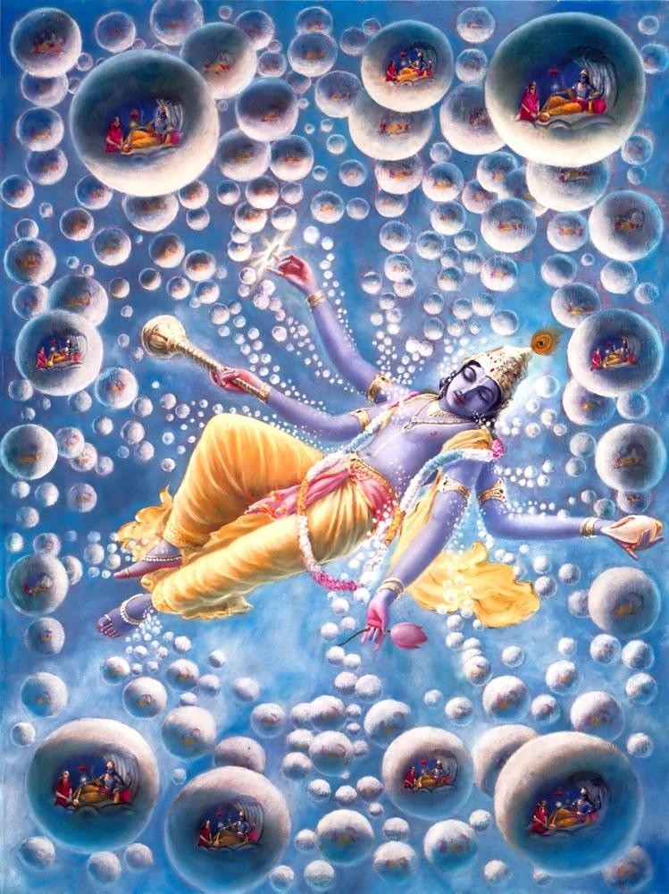
১. কারণোদকশায়ী বিষ্ণু (মহাবিষ্ণু)
অবস্থান: কারণসাগর, জড়জগতের সৃষ্টির সীমান্তে।
কাজ: অসংখ্য ব্রহ্মাণ্ডের বীজরূপ প্রকাশ। তাঁর নিঃশ্বাসের সঙ্গে ব্রহ্মাণ্ডগুলির সৃষ্টি ও লয়ের বর্ণনা রয়েছে।
মনে রাখবেন: সমস্ত ব্রহ্মাণ্ডের উৎস।

২. গর্ভোদকশায়ী বিষ্ণু
অবস্থান: প্রত্যেক ব্রহ্মাণ্ডের অভ্যন্তরে গর্ভোদক সমুদ্রে।
কাজ: তাঁর নাভি থেকে পদ্ম উৎপন্ন হয়, সেই পদ্মে ব্রহ্মার জন্ম। ব্রহ্মা জগতের বিভিন্ন লোক ও জীবদেহের গঠন করেন।
মনে রাখবেন: একটি ব্রহ্মাণ্ডের সৃষ্টির ভিত্তি।
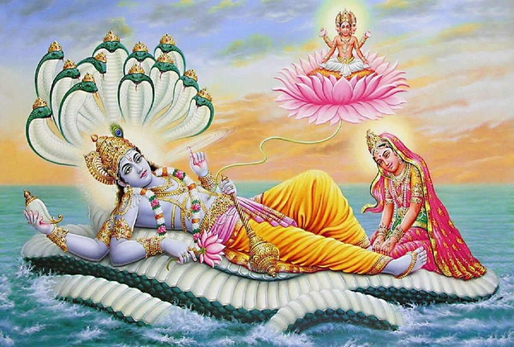
৩. ক্ষীরোদকশায়ী বিষ্ণু
অবস্থান: ব্রহ্মাণ্ডের ক্ষীরসাগরে শ্বেতদ্বীপে; একই সঙ্গে সমস্ত জীবের হৃদয়ে পরমাত্মারূপে।
কাজ: প্রত্যেক জীবের অন্তর্যামী ও সাক্ষী। দেবতারা জগতের সংকটে তাঁর শরণ নেন।
মনে রাখবেন: সকলের হৃদয়ে পরমাত্মা।
এই তিন পুরুষাবতারের বর্ণনা শ্রীচৈতন্যচরিতামৃত, আদিলীলা ৫.৭৬–৭৭-এ পাওয়া যায়।
৩. তাহলে কৃষ্ণ থেকে বিষ্ণু কীভাবে এলেন?
গৌড়ীয় বৈষ্ণব মতে বিস্তারের প্রধান ধারাটি এভাবে বোঝা যায়:
এটি মূল বিস্তারধারার সংক্ষিপ্ত রূপ; সব মধ্যবর্তী প্রকাশ এখানে দেখানো হয়নি।
চতুর্ব্যূহ মানে চারটি প্রকাশ—বাসুদেব, সঙ্কর্ষণ, প্রদ্যুম্ন ও অনিরুদ্ধ।
এখানে একটা গুরুত্বপূর্ণ পার্থক্য আছে। কৃষ্ণ থেকে বলরাম বা নারায়ণের বিস্তারকে সাধারণ মানুষের জন্মের মতো ভাববেন না। এঁরা নিত্য, পূর্ণ, দিব্য প্রকাশ। একজন প্রকাশিত হলে অন্যজনের শক্তি কমে যায় না।
শ্রীচৈতন্যচরিতামৃতের আদিলীলা পঞ্চম অধ্যায়ে এই বিস্তারধারা বিস্তারিত আছে।
৪. গোলোক, বৈকুণ্ঠ, ব্রহ্মলোক—কোনটা কোথায়?
এখানে সবচেয়ে বেশি বিভ্রান্তি হয়। কারণ সব লোক একই প্রকৃতির নয়।
| ধাম বা লোক | কার অবস্থান | প্রকৃতি |
|---|---|---|
| গোলোক বৃন্দাবন | রাধাকৃষ্ণ | সর্বোচ্চ নিত্যধাম |
| মথুরা ও দ্বারকা ধাম | কৃষ্ণের ঐশ্বর্যময় প্রকাশ | চিন্ময় কৃষ্ণলোকের বিভাগ |
| বৈকুণ্ঠলোক | শ্রীনারায়ণের বিভিন্ন প্রকাশ | নিত্য আধ্যাত্মিক জগৎ |
| কারণসাগর | মহাবিষ্ণু | জড়সৃষ্টির সীমান্ত |
| ব্রহ্মলোক (সত্যলোক) | ব্রহ্মা | জড়জগতের উচ্চতম লোক |
| স্বর্গলোক | ইন্দ্র ও দেবতাগণ | জড়জগতের অন্তর্গত |
| ভূলোক | আমরা | জড়জগতের অন্তর্গত |
খেয়াল করুন, ব্রহ্মলোক আর ব্রহ্মজ্যোতি এক নয়। ব্রহ্মলোক একটি জাগতিক লোক, আর ব্রহ্মজ্যোতি পরমতত্ত্বের নিরাকার জ্যোতির প্রকাশ হিসেবে বর্ণিত।
আর গোলোক বৃন্দাবন ও পৃথিবীর বৃন্দাবনের সম্পর্কও বিশেষ। গৌড়ীয় মতে, কৃষ্ণের নিত্যধাম গোলোক; পৃথিবীতে তাঁর প্রকট বৃন্দাবনলীলা সেই নিত্যলীলারই প্রকাশ।
৫. তাহলে শ্রীকৃষ্ণ কি একজনই?
হ্যাঁ—গৌড়ীয় সিদ্ধান্তে স্বয়ং ভগবান শ্রীকৃষ্ণ এক ও অদ্বিতীয়, কিন্তু তাঁর প্রকাশ অসংখ্য।
শ্রীমদ্ভাগবত ১.৩.২৮-এ বলা হয়েছে:
এতে চাংশকলাঃ পুংসঃ
কৃষ্ণস্তু ভগবান্ স্বয়ম্।
অর্থাৎ, পূর্বে বর্ণিত অবতারগণ ভগবানের অংশ বা কলা, কিন্তু শ্রীকৃষ্ণ স্বয়ং ভগবান।
এখানে আরেকটি সুন্দর বিষয় আছে। গোলোকের কৃষ্ণের মাধুর্যলীলা, বৈকুণ্ঠের নারায়ণের ঐশ্বর্যলীলা এবং মহাবিষ্ণুর সৃষ্টিলীলা—তিনটি আলাদা উদ্দেশ্য প্রকাশ করে। কিন্তু পরমতত্ত্ব বিচ্ছিন্ন হয়ে যায় না।
৬. পাঁচটি প্রশ্নে নিজেকে যাচাই করুন
1. অসংখ্য ব্রহ্মাণ্ড কার মাধ্যমে প্রকাশিত হয়?
ব্রহ্মা
মহাবিষ্ণু
ইন্দ্র
মহাবিষ্ণু বা কারণোদকশায়ী বিষ্ণু অসংখ্য ব্রহ্মাণ্ডের প্রকাশের উৎস।
2. ব্রহ্মার জন্ম কোন বিষ্ণুর নাভিপদ্মে?
গর্ভোদকশায়ী
ক্ষীরোদকশায়ী
মহাবিষ্ণু
প্রত্যেক ব্রহ্মাণ্ডের গর্ভোদকশায়ী বিষ্ণুর নাভিপদ্মে ব্রহ্মার আবির্ভাব।
3. আমাদের হৃদয়ে পরমাত্মারূপে কে আছেন?
ব্রহ্মা
ইন্দ্র
ক্ষীরোদকশায়ী বিষ্ণু
ক্ষীরোদকশায়ী বিষ্ণুই প্রত্যেক জীবের অন্তর্যামী।
4. ব্রহ্মলোক কি বৈকুণ্ঠের সমান?
হ্যাঁ
না
ব্রহ্মলোক জড়জগতের অন্তর্গত, বৈকুণ্ঠ নিত্য আধ্যাত্মিক ধাম।
5. গৌড়ীয় মতে কৃষ্ণের প্রথম বিস্তার কে?
বলরাম
ব্রহ্মা
শিব
শ্রীবলরাম কৃষ্ণের প্রথম স্বাংশ-বিস্তার।
আমার মনে হয়, এরপর আমাদের সবচেয়ে গুরুত্বপূর্ণ যে বিষয়টি বোঝা উচিত, সেটি হল মহাবিষ্ণুর নিঃশ্বাস থেকে ব্রহ্মাণ্ডের সৃষ্টি, সেই ব্রহ্মাণ্ডে ব্রহ্মার জন্ম, এবং ব্রহ্মার মাধ্যমে চতুর্দশ ভুবনের প্রকাশ।
তাহলেই বোঝা যাবে—ভূলোক, ভুবর্লোক, স্বর্গলোক, মহর্লোক, জনলোক, তপোলোক, সত্যলোক—এগুলি কোথায় এবং গোলোক বৃন্দাবন থেকে কতটা ভিন্ন। আর শ্রীমদ্ভাগবতের দ্বিতীয় ও তৃতীয় স্কন্ধের সৃষ্টিতত্ত্ব পড়াও অনেক সহজ হয়ে যাবে।
পর্ব ২
বিষ্ণু, মহাবিষ্ণু ও নারায়ণ
হ্যাঁ, এই পার্থক্যটা আগে পরিষ্কার হওয়া খুব দরকার। কারণ বিষ্ণু, মহাবিষ্ণু, নারায়ণ—এঁরা তিনজন স্বতন্ত্র ঈশ্বর নন, আবার সব ক্ষেত্রে একই রূপের তিনটি নামও নন।
গৌড়ীয় বৈষ্ণব দর্শনে এঁরা একই পরম ভগবানের ভিন্ন ভিন্ন প্রকাশ বা বিস্তার (স্বাংশ)।
১. বিষ্ণু, মহাবিষ্ণু ও নারায়ণের পার্থক্য
| নাম | পরিচয় | অবস্থান |
|---|---|---|
| শ্রীনারায়ণ | বৈকুণ্ঠের অধিপতি, ভগবানের চতুর্ভুজ প্রকাশ | বৈকুণ্ঠ |
| মহাবিষ্ণু | প্রথম পুরুষাবতার, অসংখ্য ব্রহ্মাণ্ডের সৃষ্টির উৎস | কারণসাগর |
| বিষ্ণু | ভগবানের ব্যাপক নাম; প্রসঙ্গভেদে বিভিন্ন বিষ্ণুরূপ বোঝায় | রূপভেদে ভিন্ন |
অর্থাৎ, নারায়ণও বিষ্ণুতত্ত্ব, মহাবিষ্ণুও বিষ্ণুতত্ত্ব। কিন্তু তাঁদের প্রকাশ ও লীলার ভূমিকা আলাদা।
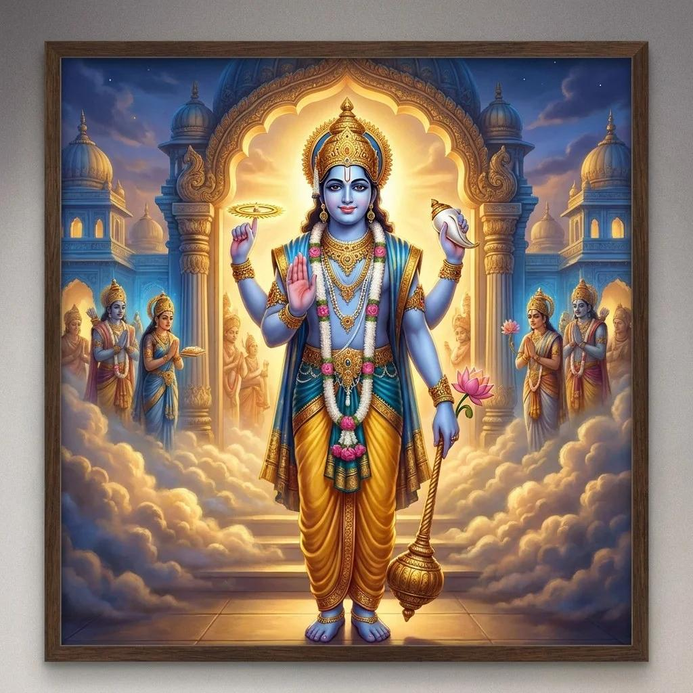
শ্রীনারায়ণ
বৈকুণ্ঠের অধিপতি
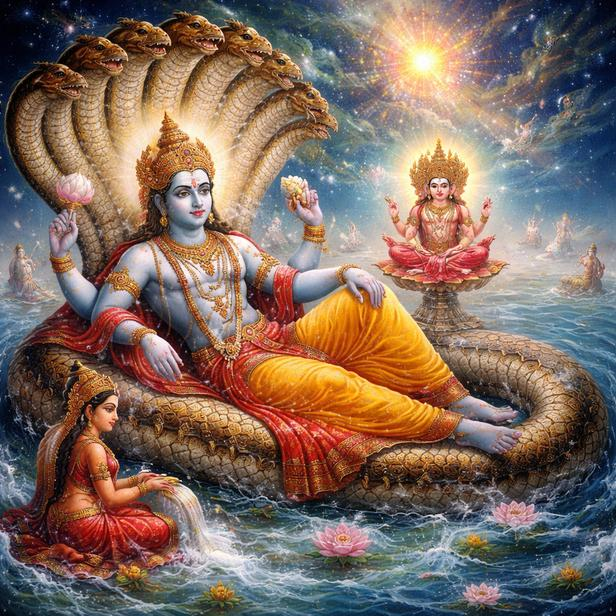
মহাবিষ্ণু
অসংখ্য ব্রহ্মাণ্ডের উৎস
২. তাহলে নারায়ণ ও মহাবিষ্ণু কি একই ব্যক্তি?
একটি উদাহরণ দিয়ে বুঝি।
একটি প্রদীপ থেকে আরেকটি প্রদীপ জ্বালালে দ্বিতীয় প্রদীপের আলো প্রথমটির চেয়ে কম হয় না। আবার প্রদীপ দুটি আলাদাভাবে প্রকাশিত থাকে।
ব্রহ্মসংহিতা ৫.৪৬-এ এই প্রদীপের উপমা ব্যবহার করে ভগবানের বিভিন্ন বিষ্ণুরূপের পূর্ণতা বোঝানো হয়েছে।
একইভাবে:
- তত্ত্বের বিচারে: নারায়ণ ও মহাবিষ্ণু অভিন্ন বিষ্ণুতত্ত্ব।
- রূপ ও লীলার বিচারে: তাঁরা পৃথক প্রকাশ।
- ক্ষমতার বিচারে: এঁরা সাধারণ জীবের মতো সীমাবদ্ধ নন।
- গৌড়ীয় সিদ্ধান্তে: শ্রীকৃষ্ণ সমস্ত ভগবৎ-প্রকাশের মূল উৎস।
৩. কৃষ্ণ থেকে নারায়ণ, তারপর মহাবিষ্ণু
এখানে একটা কথা বিশেষভাবে মনে রাখবেন: এই ধারাটি সময়ের ক্রম নয়। অর্থাৎ আগে কৃষ্ণ ছিলেন, তারপর একদিন নারায়ণের জন্ম হল—এমন নয়। এগুলি ভগবানের নিত্য প্রকাশের তাত্ত্বিক সম্পর্ক।
৪. তাহলে আমরা যখন বলি, ‘বিষ্ণু জগতের পালনকর্তা’?
সাধারণভাবে ব্রহ্মা–বিষ্ণু–মহেশ্বরের কথা বলা হয়।
কিন্তু গৌড়ীয় দর্শনে একটু গভীরে গেলে দেখা যায়, জড়জগতের পালন ও পরমাত্মারূপে অবস্থানের সঙ্গে বিশেষভাবে ক্ষীরোদকশায়ী বিষ্ণুর সম্পর্ক রয়েছে। তিনি বিষ্ণু-গুণাবতারের ভূমিকাও পালন করেন।
তাই বিষ্ণু শব্দটি শুনলেই মহাবিষ্ণু বোঝায় না। প্রসঙ্গ বুঝতে হবে।
৫. সবচেয়ে গুরুত্বপূর্ণ শাস্ত্রীয় কথা
শ্রীমদ্ভাগবত ১.৩.২৮:
কৃষ্ণস্তু ভগবান্ স্বয়ম্।
অর্থাৎ, কৃষ্ণ স্বয়ং ভগবান।
আর ব্রহ্মসংহিতা ৫.৪৮-এ মহাবিষ্ণু সম্পর্কে বলা হয়েছে:
যস্যৈকনিশ্বসিতকালমথাবলম্ব্য
জীবন্তি লোমবিলজা জগদণ্ডনাথাঃ।
এর ভাবার্থ: মহাবিষ্ণুর এক নিঃশ্বাসের সময়কালের মধ্যে অসংখ্য ব্রহ্মাণ্ডের অধিপতি ব্রহ্মাগণ জীবন ধারণ করেন।
এই মহাবিষ্ণুকেও শ্লোকটির শেষে আদিপুরুষ গোবিন্দের প্রকাশ বলে বর্ণনা করা হয়েছে।
সুতরাং একটি বাক্যে মনে রাখুন:
কৃষ্ণ মূল উৎস, নারায়ণ তাঁর বৈকুণ্ঠ-প্রকাশ, মহাবিষ্ণু জড়সৃষ্টির জন্য বিশেষ প্রকাশ, আর ক্ষীরোদকশায়ী বিষ্ণু সকল জীবের হৃদয়ে পরমাত্মা।
এবার আমরা শ্রীমদ্ভাগবতের সৃষ্টিতত্ত্বে প্রবেশ করতে পারি।
আমাদের প্রথম প্রশ্ন হবে:
মহাবিষ্ণু যখন কারণসাগরে শয়ন করেন, তখন তাঁর থেকে অসংখ্য ব্রহ্মাণ্ড কীভাবে প্রকাশিত হয়? তারপর সেই ব্রহ্মাণ্ডে গর্ভোদকশায়ী বিষ্ণু কীভাবে প্রবেশ করেন? ব্রহ্মার জন্ম হয় কীভাবে?
এই তিনটি ঘটনা বুঝলে চতুর্দশ ভুবন, ব্রহ্মার এক দিন, কল্প, মন্বন্তর—সব একে একে পরিষ্কার হয়ে যাবে।
পর্ব ৩
সৃষ্টিতত্ত্ব ও চতুর্দশ ভুবন
এবার আমরা শ্রীমদ্ভাগবতের এক অসাধারণ বিষয় নিয়ে আলোচনা করব—সৃষ্টিতত্ত্ব (Cosmology)।
আজকের আলোচনায় আমরা মহাবিষ্ণুর কারণসাগরে শয়ন থেকে শুরু করে ব্রহ্মার জন্ম, চতুর্দশ ভুবনের সৃষ্টি এবং সেই সৃষ্টিতে শ্রীকৃষ্ণের ভূমিকা বুঝব।
মূলত শ্রীমদ্ভাগবতের দ্বিতীয় ও তৃতীয় স্কন্ধ, ব্রহ্মসংহিতা এবং গৌড়ীয় বৈষ্ণব ব্যাখ্যার আলোকে এগোব।
১. সৃষ্টির আগে কী ছিল?
একটা প্রশ্ন ভাবুন।
আজ আমরা পৃথিবী, সূর্য, নক্ষত্র, কোটি কোটি ছায়াপথ দেখি। কিন্তু যখন এই জড়জগত প্রকাশিত হয়নি, তখন কী ছিল?
গৌড়ীয় বৈষ্ণব দর্শন অনুযায়ী, তখনও শ্রীকৃষ্ণ, তাঁর নিত্যধাম গোলোক বৃন্দাবন, বৈকুণ্ঠ এবং নিত্য পার্ষদগণ বিদ্যমান ছিলেন।
কারণ আধ্যাত্মিক জগৎ সৃষ্টি ও প্রলয়ের অধীন নয়।
জড়জগত কখনও প্রকাশিত হয়, কখনও অব্যক্ত অবস্থায় থাকে। কিন্তু গোলোক বা বৈকুণ্ঠের সৃষ্টি ও ধ্বংস হয় না।
শ্রীমদ্ভাগবত ২.৯.৩৩-এর চতুঃশ্লোকী ভাগবতে ভগবান ব্রহ্মাকে বলেন:
অহমেবাসমেবাগ্রে নান্যদ্ যৎ সদসৎ পরম্।
ভাবার্থ: সৃষ্টির পূর্বে আমিই ছিলাম; প্রকাশিত ও অপ্রকাশিত জগতের অতীতেও আমিই বিদ্যমান।
এখানে ‘আমিই ছিলাম’ বলতে ভগবানের নিত্য অস্তিত্ব বোঝায়, তাঁর ধাম বা শক্তির অনস্তিত্ব নয়।
২. মহাবিষ্ণুর নিঃশ্বাস থেকে অসংখ্য ব্রহ্মাণ্ড
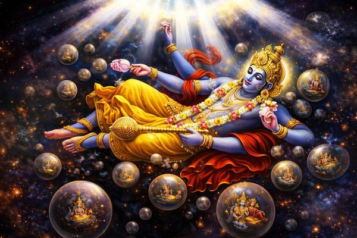
গৌড়ীয় শাস্ত্রীয় বর্ণনা অনুযায়ী, মহাবিষ্ণু কারণসাগরে অনন্তশেষের উপর শয়ন করেন।
তাঁর শরীরের রোমকূপ থেকে অসংখ্য ব্রহ্মাণ্ডের বীজরূপ প্রকাশিত হয়। তাঁর নিঃশ্বাসের সঙ্গে ব্রহ্মাণ্ডসমূহের প্রকাশ ও লয়ের সম্পর্ক বর্ণিত হয়েছে।
এখানে তিনটি বিষয় মনে রাখবেন:
- একটি মাত্র ব্রহ্মাণ্ড নয়—অসংখ্য ব্রহ্মাণ্ড।
- প্রত্যেক ব্রহ্মাণ্ডে পৃথক ব্রহ্মা থাকতে পারেন।
- ব্রহ্মার জীবনকালও মহাবিষ্ণুর এক নিঃশ্বাসের তুলনায় সীমিত।
ব্রহ্মসংহিতা ৫.৪৮-এ এই বিষয়টি সুন্দরভাবে বর্ণিত।
প্রশ্ন: আমাদের ব্রহ্মাণ্ড কি একমাত্র ব্রহ্মাণ্ড?
উত্তর: না। ভাগবতীয় বিশ্বতত্ত্বে অসংখ্য ব্রহ্মাণ্ডের কথা বলা হয়েছে।
তবে এগুলি শাস্ত্রীয় আধ্যাত্মিক বিশ্বতত্ত্বের বর্ণনা; আধুনিক জ্যোতির্বিজ্ঞানে পরীক্ষিত মহাবিশ্বের মানচিত্রের সঙ্গে এক করে দেখা উচিত নয়।
৩. প্রতিটি ব্রহ্মাণ্ডে গর্ভোদকশায়ী বিষ্ণুর প্রবেশ
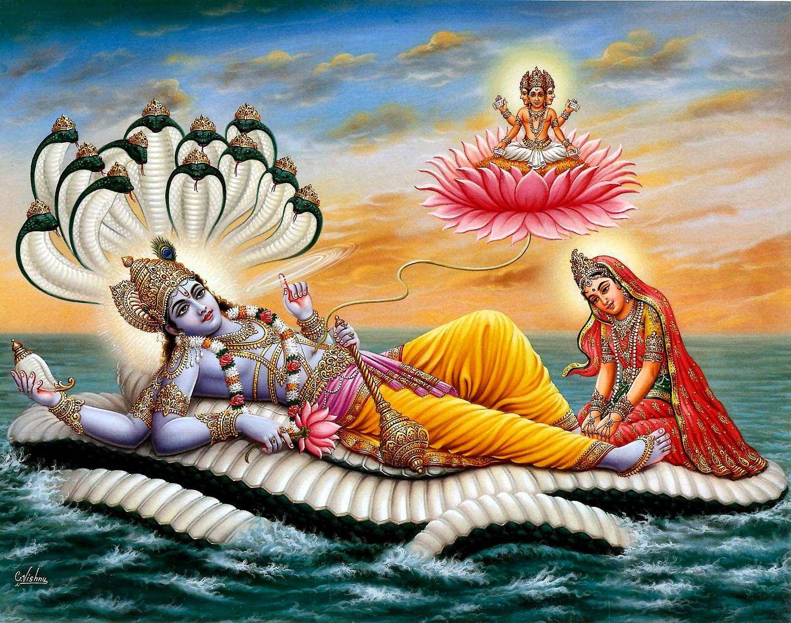
এবার ধরুন, অসংখ্য ব্রহ্মাণ্ডের মধ্যে একটি আমাদের ব্রহ্মাণ্ড।
সেই ব্রহ্মাণ্ডের মধ্যে মহাবিষ্ণুর বিস্তার গর্ভোদকশায়ী বিষ্ণু প্রবেশ করেন।
তিনি গর্ভোদক সমুদ্রে শয়ন করেন। তাঁর নাভি থেকে একটি দিব্য পদ্মের আবির্ভাব ঘটে।
সেই পদ্মের উপর জন্মগ্রহণ করেন চতুর্মুখ ব্রহ্মা।
এখানে একটা পার্থক্য অত্যন্ত গুরুত্বপূর্ণ।
ব্রহ্মা এবং ব্রহ্মাণ্ডের উৎস বিষ্ণু এক নন।
ব্রহ্মা একজন বিশেষ ক্ষমতাপ্রাপ্ত জীব, যাঁর কাজ ব্রহ্মাণ্ডের ভিতরে বিভিন্ন লোক, জীবদেহ এবং সৃষ্টির বিন্যাস করা। আর বিষ্ণু হলেন ভগবৎতত্ত্ব।
তাই ব্রহ্মাকে secondary creator বলা যেতে পারে।
৪. ব্রহ্মার জন্ম এবং তাঁর প্রথম বিভ্রান্তি
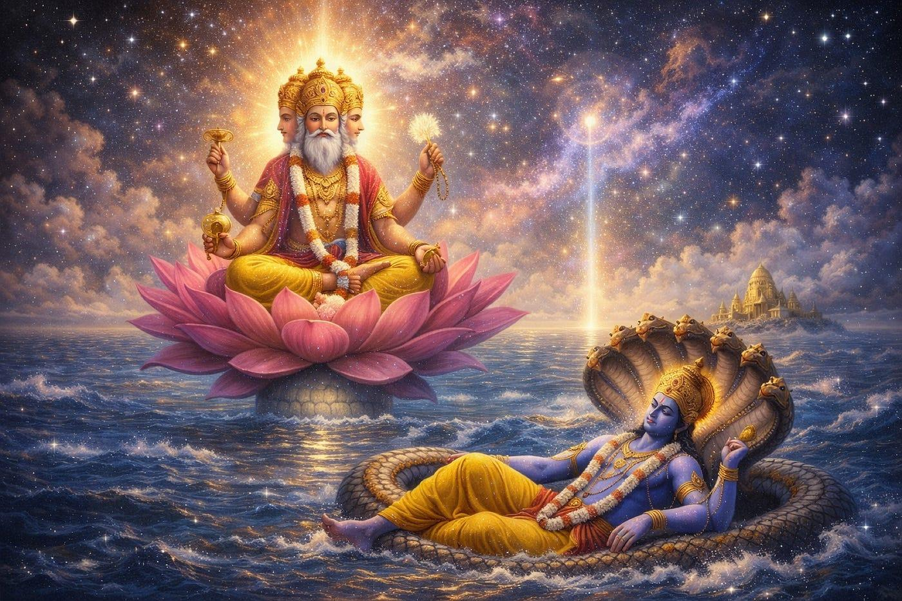
এই ঘটনাটি আমার কাছে ভাগবতের অন্যতম সুন্দর আধ্যাত্মিক শিক্ষা।
ব্রহ্মা পদ্মের উপর আবির্ভূত হলেন।
চারদিকে অন্ধকার, জলরাশি। তিনি জানেন না কোথা থেকে এসেছেন, কে তাঁর স্রষ্টা, তাঁর কর্তব্যই বা কী।
তিনি পদ্মের নাল ধরে নিজের উৎস অনুসন্ধানের চেষ্টা করলেন। কিন্তু উৎস খুঁজে পেলেন না।
অবশেষে তিনি ফিরে এসে ধ্যানে বসলেন।
ভাগবতের বর্ণনায় তিনি ‘তপ’ নির্দেশ লাভ করেন—অর্থাৎ তপস্যা ও অন্তর্মুখী সাধনার মাধ্যমে জ্ঞানলাভের পথ।
দীর্ঘ তপস্যার পর ভগবান তাঁর কাছে আত্মপ্রকাশ করেন এবং সৃষ্টির জ্ঞান দান করেন।
এখানে একটি গভীর শিক্ষা রয়েছে।
শুধু বাহ্যিক অনুসন্ধানে ব্রহ্মা নিজের উৎস জানতে পারলেন না। ভগবানের কৃপা ও তপস্যার মাধ্যমে তাঁর জ্ঞান প্রকাশিত হল।
এই ঘটনাগুলি শ্রীমদ্ভাগবতের দ্বিতীয় স্কন্ধের নবম অধ্যায় এবং তৃতীয় স্কন্ধের অষ্টম অধ্যায়ে বর্ণিত হয়েছে।
৫. এরপর ব্রহ্মা কী সৃষ্টি করলেন?
ব্রহ্মা শূন্য থেকে সবকিছু সৃষ্টি করেননি। ভগবানের শক্তিতে প্রকাশিত জড় উপাদানকে অবলম্বন করে তিনি সৃষ্টির বিন্যাস করেন।
ভাগবতে দুটি ধারণা আছে:
| সৃষ্টি | অর্থ | প্রধান ভূমিকা |
|---|---|---|
| সর্গ | জড় উপাদান ও মহত্তত্ত্বের প্রাথমিক সৃষ্টি | ভগবানের পুরুষাবতার |
| বিসর্গ | সেই উপাদান থেকে জীবদেহ, প্রজাপতি ও জগতের বৈচিত্র্যময় বিন্যাস | ব্রহ্মা |
ব্রহ্মা এরপর বিভিন্ন প্রজাপতি, ঋষি, মনু প্রভৃতির সৃষ্টির সঙ্গে যুক্ত হন। তাঁদের মাধ্যমেও জীবজগতের বিস্তার ঘটে।
৬. চতুর্দশ ভুবন কী?
এবার আসল বিষয়।
ভাগবতীয় বিশ্বতত্ত্বে একটি ব্রহ্মাণ্ডের মধ্যে চৌদ্দটি প্রধান লোক বা ভুবনের কথা বলা হয়।
এটি ভাগবতীয় চতুর্দশ লোকের ধারণাগত ক্রম; আধুনিক জ্যোতির্বৈজ্ঞানিক স্কেল বা দূরত্বের চিত্র নয়।
এখানে একটি আশ্চর্য বিষয় আছে।
সত্যলোক বা ব্রহ্মলোক পর্যন্ত সমস্ত লোক জড়জগতের অন্তর্গত।
অর্থাৎ, স্বর্গলোকও চিরস্থায়ী নয়। ব্রহ্মলোকও চিরস্থায়ী নয়।
কিন্তু গোলোক বৃন্দাবন এবং বৈকুণ্ঠ জড়জগতের ঊর্ধ্বে, নিত্য আধ্যাত্মিক ধাম।
ভগবদ্গীতা ৮.১৬-তে শ্রীকৃষ্ণ বলেছেন:
আব্রহ্মভুবনাল্লোকাঃ পুনরাবর্তিনোऽর্জুন।
মামুপেত্য তু কৌন্তেয় পুনর্জন্ম ন বিদ্যতে॥
ভাবার্থ: হে অর্জুন, ব্রহ্মলোক পর্যন্ত সমস্ত লোক থেকেই পুনর্জন্মের সম্ভাবনা আছে। কিন্তু আমাকে লাভ করলে আর পুনর্জন্ম হয় না।
৭. তাহলে সৃষ্টির পুরো ধারাটা কী দাঁড়াল?
ক্ষীরোদকশায়ী বিষ্ণুর ভূমিকা এই ধারার পাশাপাশি চলতে থাকে—তিনি সকল জীবের হৃদয়ে পরমাত্মারূপে এবং সমগ্র জগতে অন্তর্যামীরূপে অবস্থান করেন।
৮. এই সৃষ্টিতত্ত্ব থেকে আমাদের শিক্ষা কী?
শ্রীমদ্ভাগবত শুধু ব্রহ্মাণ্ডের গঠন বোঝায় না। এর মাধ্যমে মানুষের জীবনের কয়েকটি মৌলিক প্রশ্নের উত্তরও দেয়।
প্রথম শিক্ষা—ব্রহ্মার বিনয়। ব্রহ্মাণ্ডের স্রষ্টারূপে দায়িত্ব পাওয়ার পরও ব্রহ্মা নিজের উৎস জানতেন না। তাঁকেও জ্ঞানলাভের জন্য ভগবানের আশ্রয় নিতে হয়েছিল।
দ্বিতীয় শিক্ষা—জড়জগত অনিত্য। স্বর্গলোকের সুখও চিরস্থায়ী নয়। তাই ভাগবতের লক্ষ্য শুধু উচ্চতর লোকে যাওয়া নয়, ভগবৎপ্রেম লাভ করা।
তৃতীয় শিক্ষা—ভগবান দূরেও আছেন, কাছেও আছেন। মহাবিষ্ণুরূপে অসংখ্য ব্রহ্মাণ্ডের উৎস, অথচ ক্ষীরোদকশায়ী বিষ্ণুরূপে প্রত্যেক জীবের হৃদয়ে অন্তর্যামী।
এটাই গৌড়ীয় বৈষ্ণব দর্শনের এক অপূর্ব সমন্বয়।
৯. এরপর কোন প্রশ্নটা সবচেয়ে গুরুত্বপূর্ণ?
আমার মনে হয়, এবার আমাদের ব্রহ্মার সময়কাল বোঝা উচিত।
কারণ সেখানে তিনটি আশ্চর্য প্রশ্ন আসে:
- ব্রহ্মার এক দিন মানুষের হিসাবে কত বছর?
- ব্রহ্মার দিন শেষ হলে কি পৃথিবীসহ সবকিছু ধ্বংস হয়ে যায়?
- মহাপ্রলয়ের সময় ব্রহ্মা, দেবতাগণ এবং সমস্ত জীব কোথায় থাকেন?
আর এর সঙ্গে যুক্ত হবে চার যুগ, এক মহাযুগ, ৭১ মহাযুগে এক মন্বন্তর এবং এক কল্প।
এগুলো বুঝলে ভাগবতের বিভিন্ন স্কন্ধে মনু, অবতার, সৃষ্টি ও প্রলয়ের ঘটনা কোন সময়ে ঘটেছে, তার একটি পরিষ্কার ধারণা তৈরি হবে।
পর্ব ৪
যুগ, মন্বন্তর, কল্প ও প্রলয়
আজ আমরা শ্রীমদ্ভাগবতের একটি বিস্ময়কর বিষয় বুঝব—ভগবানের সৃষ্টিতে সময় কীভাবে চলে? ব্রহ্মার এক দিন কত বড়? যুগ, মন্বন্তর, কল্প ও প্রলয়ের মধ্যে সম্পর্ক কী?
এটি বুঝলে ভাগবতের বিভিন্ন স্কন্ধে বর্ণিত ঘটনা কখন ঘটছে, কোন মনুর সময়ে ঘটছে, আর কখন সৃষ্টি বা প্রলয় হচ্ছে—সেগুলো অনেক পরিষ্কার হবে।
মূল শাস্ত্রীয় ভিত্তি: শ্রীমদ্ভাগবত ৩.১১, ৮.১, ১২.৪ এবং ভগবদ্গীতা ৮.১৭–১৯।
১. প্রথমে সময়ের সম্পূর্ণ মানচিত্র
এখানে প্রতিটি হিসাব শাস্ত্রীয় সময়পরিমাপ অনুযায়ী। আধুনিক বিজ্ঞানের পরীক্ষিত মহাবিশ্বের বয়সের সঙ্গে এগুলো এক করে দেখা উচিত নয়।
২. চার যুগের সময়কাল
| সত্যযুগ | ১৭,২৮,০০০ বছর |
|---|---|
| ত্রেতাযুগ | ১২,৯৬,০০০ বছর |
| দ্বাপরযুগ | ৮,৬৪,০০০ বছর |
| কলিযুগ | ৪,৩২,০০০ বছর |
| মোট | ৪৩,২০,০০০ বছর |
গৌড়ীয় বৈষ্ণব পরম্পরায় প্রচলিত কালগণনা অনুযায়ী, আমরা এখন কলিযুগে, যার সূচনা শ্রীকৃষ্ণের পৃথিবী থেকে অপ্রকট হওয়ার সঙ্গে সম্পর্কিত।
প্রচলিত ৩১০২ খ্রিস্টপূর্বাব্দের সূচনা ধরে ২০২৬ খ্রিস্টাব্দে কলিযুগের প্রায় ৫,১২৭ বছর অতিবাহিত হয়েছে।
৩. মন্বন্তর কী? মনু কে?
মনু হলেন মানবজাতির আদিপুরুষ এবং একটি বিশেষ যুগপর্বের প্রশাসনিক অধিপতি।
একজন মনুর শাসনকালকে বলা হয় মন্বন্তর।
প্রত্যেক মন্বন্তরে মনু, ইন্দ্র, সপ্তর্ষি এবং ভগবানের বিশেষ মন্বন্তরাবতারের বিবরণ পাওয়া যায়।
এক ব্রহ্মদিবসে ১৪ জন মনু থাকেন।
আমরা এখন সপ্তম মনু—বৈবস্বত মনুর মন্বন্তরে আছি বলে শাস্ত্রীয় পরম্পরায় ধরা হয়।
৭ নম্বর বৈবস্বত মন্বন্তর আমাদের বর্তমান মন্বন্তর। বাকিগুলি এখানে ক্রমিক সংখ্যা দিয়ে দেখানো হয়েছে।
এখন একটি গুরুত্বপূর্ণ বিষয়—ভগবান শ্রীকৃষ্ণের বৃন্দাবনলীলা আমাদের বর্তমান বৈবস্বত মন্বন্তরের ২৮তম দ্বাপরযুগের শেষভাগে প্রকাশিত হয়েছে বলে গৌড়ীয় পরম্পরায় বর্ণিত।
৪. ব্রহ্মার এক দিন শেষ হলে কী ঘটে?
এবার আসি প্রলয়ের কথায়।
ভাগবতে প্রলয়ের বিভিন্ন প্রকার বর্ণিত হয়েছে। দুটি প্রধান পর্যায় আগে বুঝি।
নৈমিত্তিক প্রলয় — ব্রহ্মার রাত্রি
ব্রহ্মার দিন শেষ হলে তাঁর রাত্রি শুরু হয়। তখন নিম্ন ও মধ্যবর্তী লোকসমূহের লয় ঘটে বলে বর্ণিত। মহর্লোকের ঋষিরা উচ্চতর জনলোকে গমন করেন।
ব্রহ্মার পরবর্তী দিন শুরু হলে পুনরায় সৃষ্টি প্রকাশিত হয়।
প্রাকৃতিক প্রলয় — ব্রহ্মার জীবনশেষে
ব্রহ্মার একশত বছর পূর্ণ হলে সম্পূর্ণ জড়ব্রহ্মাণ্ডের উপাদানসমূহ প্রকৃতির অব্যক্ত অবস্থায় লীন হয়।
ব্রহ্মা ও অন্য জীবদের স্থূল জাগতিক অবস্থার অবসান হয়; জীবাত্মার অস্তিত্ব নষ্ট হয় না।
ভাগবত ১২.৪ অধ্যায়ে এই প্রলয়তত্ত্ব বিস্তারিত আছে।
৫. প্রলয়ের সময় জীবাত্মারা কোথায় থাকেন?
এটি অত্যন্ত গুরুত্বপূর্ণ প্রশ্ন।
গৌড়ীয় ব্যাখ্যায় জীবাত্মা নিত্য। দেহ নষ্ট হলেও জীবাত্মা নষ্ট হয় না।
মহাপ্রলয়ের সময় যেসব জীব এখনও মুক্ত হননি, তাঁরা ভগবানের শক্তির আশ্রয়ে অব্যক্ত অবস্থায় থাকেন। নতুন সৃষ্টি প্রকাশিত হলে তাঁদের পূর্বকর্ম ও প্রকৃতির নিয়মানুসারে পুনরায় জাগতিক প্রকাশ ঘটে।
অন্যদিকে, যাঁরা ভগবদ্ধাম লাভ করেছেন, তাঁদের আর এই জন্ম-মৃত্যুর চক্রে ফিরে আসতে হয় না।
এখানে ভগবদ্গীতা ৮.১৯ খুব প্রাসঙ্গিক:
ভূতগ্রামঃ স এবায়ং ভূত্বা ভূত্বা প্রলীয়তে।
ভাবার্থ: জীবসমষ্টি বারবার প্রকাশিত হয় এবং পুনরায় লয়প্রাপ্ত হয়।
অর্থাৎ, প্রলয় মানে জীবাত্মার বিনাশ নয়; জাগতিক প্রকাশের সাময়িক বা বৃহত্তর অবসান।
৬. সবকিছু একসঙ্গে মিলিয়ে দেখুন
৭. এই বিশাল সময়চক্রের আধ্যাত্মিক শিক্ষা
একবার ভাবুন, ব্রহ্মার এক দিন ৪৩২ কোটি বছর। তাঁর জীবনকাল ৩১১.০৪ ট্রিলিয়ন বছর।
অথচ ভাগবতের সিদ্ধান্তে ব্রহ্মাও সময়ের অধীন।
কিন্তু শ্রীকৃষ্ণ সময়ের অধীন নন।
এই জন্য ভগবদ্গীতায় কৃষ্ণ নিজেকে কাল হিসেবেও প্রকাশ করেছেন (১১.৩২)।
ভাগবতের শিক্ষা শুধু সময়ের বিশালতা নয়। শিক্ষা হল—যে জগতে ব্রহ্মারও জীবন সীমিত, সেখানে স্থায়ী আশ্রয় কোথায়?
গৌড়ীয় বৈষ্ণব সিদ্ধান্তে সেই আশ্রয় হল ভগবানের নিত্যধাম এবং তাঁর প্রেমময় সেবা।
৮. এবার একটি সুন্দর সংযোগ
আমরা এতক্ষণ তিনটি বিষয় বুঝলাম:
- স্থান: গোলোক, বৈকুণ্ঠ, চতুর্দশ ভুবন।
- সৃষ্টি: মহাবিষ্ণু, গর্ভোদকশায়ী বিষ্ণু, ব্রহ্মা।
- সময়: যুগ, মন্বন্তর, কল্প ও প্রলয়।
এরপর শ্রীমদ্ভাগবত পড়ার জন্য একটি অত্যন্ত উপকারী বিষয় হবে বর্তমান ব্রহ্মাণ্ডের সময়রেখা।
অর্থাৎ, আমরা কোন ব্রহ্মার কোন দিনে, কোন মন্বন্তরে, কোন মহাযুগে আছি? আর সত্যযুগে নৃসিংহদেব, ত্রেতায় শ্রীরামচন্দ্র, দ্বাপরে শ্রীকৃষ্ণ—এই অবতারদের ঘটনাগুলো কীভাবে সময়রেখায় বসবে?
এখানে একটি সূক্ষ্ম বিষয়ও বুঝব: সমস্ত অবতারকে শুধু বর্তমান চার যুগের একটি চক্রে বসালে ভুল হতে পারে। ভাগবতে বিভিন্ন মন্বন্তর ও কল্পের ঘটনাও বর্ণিত হয়েছে।
পর্ব ৫
আমাদের অবস্থান ও অবতারদের সময়রেখা
এবার আমরা শ্রীমদ্ভাগবতের সৃষ্টিতত্ত্বের একটি অত্যন্ত গুরুত্বপূর্ণ জায়গায় পৌঁছেছি।
আমরা এখন ব্রহ্মার কোন দিনে, কোন মন্বন্তরে, কোন মহাযুগে আছি? আর নৃসিংহদেব, বামনদেব, শ্রীরামচন্দ্র ও শ্রীকৃষ্ণের অবতারলীলাগুলি এই বিশাল সময়চক্রের কোথায় ঘটেছে?
এটি বুঝলে ভাগবতের বিভিন্ন স্কন্ধের ঘটনাগুলি একসঙ্গে সাজানো অনেক সহজ হবে।
১. মহাবিশ্বের সময়রেখায় আমাদের অবস্থান
গৌড়ীয় বৈষ্ণব পরম্পরায় প্রচলিত পুরাণীয় কালগণনা অনুসারে আমাদের বর্তমান অবস্থান:
অর্থাৎ, আমরা ব্রহ্মার একটি দিনের অনেকটা সময় অতিক্রম করে এসেছি। তবে ব্রহ্মার বর্তমান দিন শেষ হতে এখনও বিপুল সময় বাকি।
২. বর্তমান ব্রহ্মদিবসের ১৪ জন মনু
প্রথম ছয়টি মন্বন্তর অতীত, সপ্তম বৈবস্বত মন্বন্তর বর্তমান এবং পরবর্তী সাতটি ভবিষ্যৎ।
শ্রীমদ্ভাগবতের অষ্টম স্কন্ধে মনুদের ইতিহাস বিশেষভাবে আলোচিত হয়েছে।
বর্তমান মনু বৈবস্বত, অর্থাৎ সূর্যদেব বিবস্বানের পুত্র। মহাপ্রলয়ের নয়, একটি বিশেষ মন্বন্তর-পরিবর্তনের সঙ্গে যুক্ত মৎস্যাবতারের কাহিনিতে তাঁর গুরুত্বপূর্ণ ভূমিকা রয়েছে।
৩. তাহলে অবতারদের ঘটনাগুলি কখন ঘটেছিল?
এখানে একটি ভুল ধারণা আগে দূর করা দরকার।
আমরা সাধারণত শুনি:
- সত্যযুগে নৃসিংহদেব
- ত্রেতাযুগে শ্রীরামচন্দ্র
- দ্বাপরযুগে শ্রীকৃষ্ণ
- কলিযুগে শ্রীচৈতন্য মহাপ্রভু
এটি ধর্মীয় শিক্ষায় প্রচলিত একটি সরল পরিচয়। কিন্তু ভাগবতের সমস্ত অবতারলীলার নির্ভুল ঐতিহাসিক সময়রেখা হিসেবে এটি যথেষ্ট নয়।
কারণ এক ব্রহ্মদিবসে এক হাজার মহাযুগ রয়েছে। বহু অবতারলীলার ঘটনা অন্য মন্বন্তরেও ঘটেছে।
| অবতার | প্রধান ঘটনা | শাস্ত্রীয় সময়-সংযোগ |
|---|---|---|
| বরাহদেব | পৃথিবীর উদ্ধার | কল্প ও সৃষ্টির প্রেক্ষাপট |
| নৃসিংহদেব | প্রহ্লাদকে রক্ষা, হিরণ্যকশিপু বধ | প্রাচীন মন্বন্তরের ঘটনা; নির্দিষ্ট মহাযুগ সব বর্ণনায় স্পষ্ট নয় |
| বামনদেব | বলি মহারাজের কাছ থেকে ত্রিপদ ভূমি গ্রহণ | বর্তমান বৈবস্বত মন্বন্তরের পূর্ববর্তী চাক্ষুষ মন্বন্তরের সঙ্গে সম্পর্কিত |
| শ্রীরামচন্দ্র | রাবণবধ, ধর্মরাজ্য প্রতিষ্ঠা | ত্রেতাযুগ; প্রচলিত পুরাণীয় গণনায় বর্তমান মন্বন্তরের পূর্ববর্তী মহাযুগ |
| শ্রীকৃষ্ণ | বৃন্দাবন, মথুরা, দ্বারকা লীলা | বর্তমান বৈবস্বত মন্বন্তরের ২৮তম দ্বাপরযুগ |
| শ্রীচৈতন্য মহাপ্রভু | নামসংকীর্তন ও কৃষ্ণপ্রেম প্রচার | বর্তমান ২৮তম মহাযুগের কলিযুগ |
বিশেষ করে নৃসিংহদেবের ক্ষেত্রে ‘সত্যযুগ’ কথাটি শুনে বর্তমান ২৮তম মহাযুগের সত্যযুগ ধরে নেওয়া ঠিক হবে না।
৪. ভাগবতের তিনটি ঘটনা সময়রেখায় বসাই
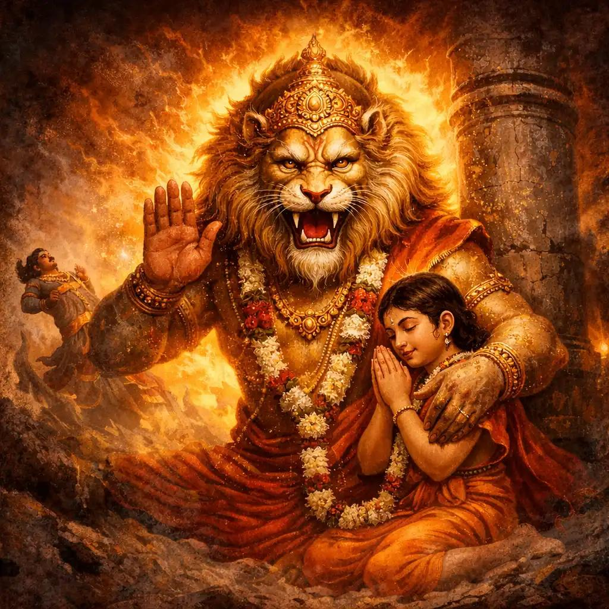
প্রহ্লাদ ও নৃসিংহদেব
শ্রীমদ্ভাগবত সপ্তম স্কন্ধ।
হিরণ্যকশিপুর অত্যাচার, প্রহ্লাদের অবিচল ভক্তি এবং স্তম্ভ থেকে নৃসিংহদেবের আবির্ভাব।
শিক্ষা: ভক্তের রক্ষায় ভগবান সময়, স্থান ও সাধারণ নিয়মের সীমায় আবদ্ধ নন।
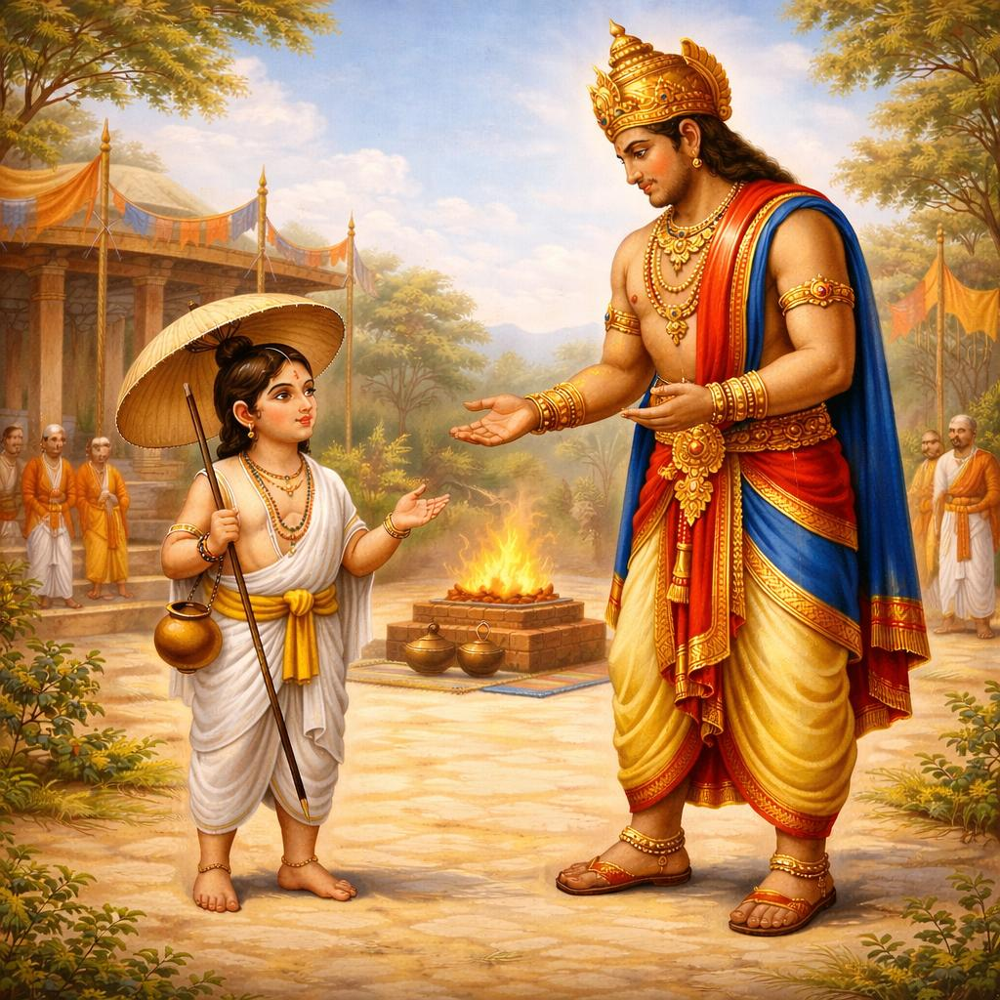
বলি মহারাজ ও বামনদেব
শ্রীমদ্ভাগত অষ্টম স্কন্ধ।
বামনদেব তিন পা ভূমি চাইলেন। বিরাট ত্রিবিক্রমরূপে বিশ্বব্যাপ্ত হয়ে বলি মহারাজের আত্মসমর্পণ গ্রহণ করলেন।
শিক্ষা: প্রকৃত শরণাগতি কেবল সম্পদদান নয়, নিজেকে ভগবানের কাছে সমর্পণ করা।
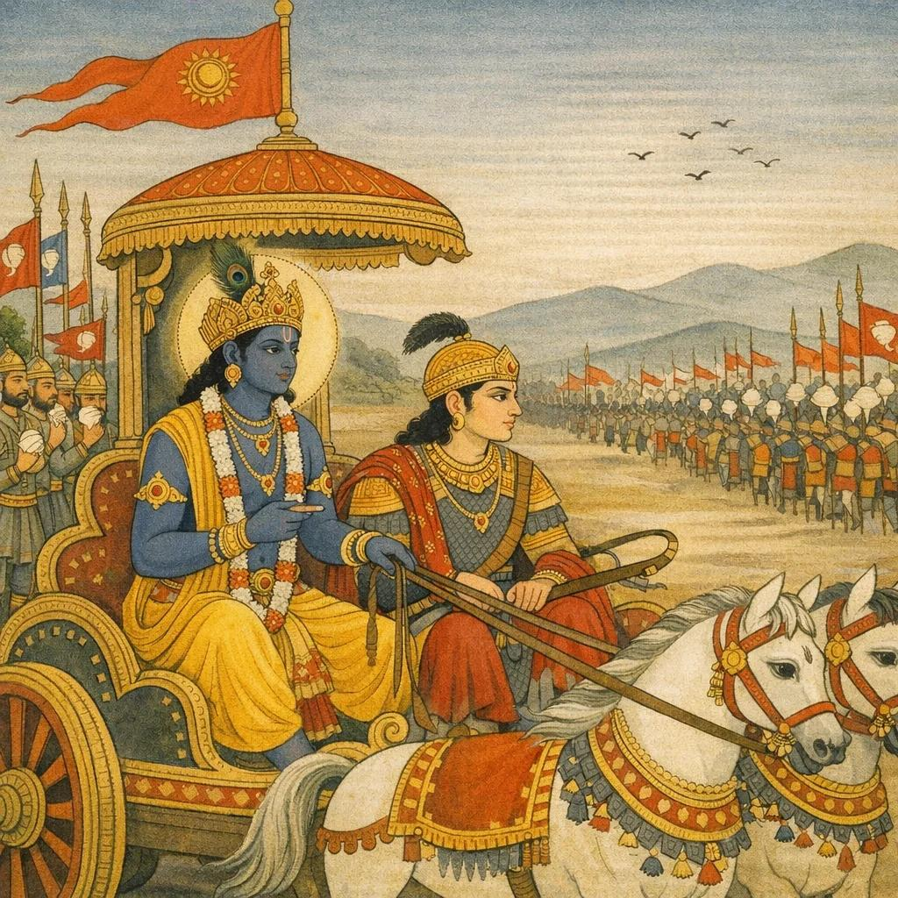
শ্রীকৃষ্ণ ও অর্জুন
শ্রীমদ্ভাগবত প্রথম ও দশম স্কন্ধে সংশ্লিষ্ট লীলা; ভগবদ্গীতায় কুরুক্ষেত্রের উপদেশ।
বর্তমান বৈবস্বত মন্বন্তরের ২৮তম দ্বাপরযুগের অন্তিম পর্ব।
শিক্ষা: কর্ম, জ্ঞান ও ভক্তির মধ্যে ভগবানের প্রতি শরণাগতির সর্বোচ্চ গুরুত্ব।
৫. কৃষ্ণ কেন প্রতি দ্বাপরযুগে একইভাবে আসেন না?
গৌড়ীয় বৈষ্ণব দর্শনে একটি বিশেষ ব্যাখ্যা রয়েছে।
শ্রীকৃষ্ণের অবতার ও স্বয়ং কৃষ্ণের প্রকাশের মধ্যে পার্থক্য করা হয়।
ভগবান বিভিন্ন যুগে ধর্মরক্ষার জন্য যুগাবতাররূপে প্রকাশিত হন। কিন্তু ব্রজেন্দ্রনন্দন স্বয়ং শ্রীকৃষ্ণের পূর্ণ বৃন্দাবনলীলা একটি বিশেষ বিরল প্রকাশ।
গৌড়ীয় পরম্পরায় বর্ণিত হয়, স্বয়ং কৃষ্ণের এই প্রকট লীলা ব্রহ্মার এক দিনে একবার প্রকাশিত হয়—বর্তমান দিনে ২৮তম দ্বাপরযুগে।
এর পরবর্তী কলিযুগে শ্রীচৈতন্য মহাপ্রভুর আবির্ভাবের সঙ্গে এই কৃষ্ণলীলার বিশেষ সম্পর্ক রয়েছে।
এই ব্যাখ্যা শ্রীচৈতন্যচরিতামৃতের আদিলীলা তৃতীয় ও চতুর্থ অধ্যায়ে বিস্তৃত হয়েছে।
৬. এবার একটি গভীর প্রশ্ন: ব্রহ্মার সময় আর কৃষ্ণের সময় কি এক?
না, গৌড়ীয় দর্শনে ভগবানের নিত্যলীলাকে জড়জগতের সময়ের অধীন মনে করা হয় না।
একদিকে আমাদের ব্রহ্মাণ্ডে কৃষ্ণের জন্ম, বাল্যলীলা, রাসলীলা ও দ্বারকালীলার একটি প্রকাশিত কালক্রম আছে।
অন্যদিকে গোলোক বৃন্দাবনে কৃষ্ণের নিত্যলীলা অবিরাম।
এখানেই দুটি শব্দ গুরুত্বপূর্ণ:
প্রকটলীলা: জড়জগতে জীবের দৃষ্টিগোচর হয়ে ভগবানের লীলাপ্রকাশ।
অপ্রকটলীলা: সাধারণ জাগতিক দৃষ্টির অগোচরে ভগবানের নিত্যলীলা।
তাই শ্রীকৃষ্ণ পৃথিবীতে আবির্ভূত হলেন মানে এই নয় যে তার আগে গোলোকে কৃষ্ণ ছিলেন না।
একইভাবে কৃষ্ণ পৃথিবী থেকে অপ্রকট হলেন মানে তাঁর নিত্যলীলার অবসান হল না।
৭. এতক্ষণে আমাদের সম্পূর্ণ জ্ঞানচিত্র
| বিষয় | আমরা কী শিখলাম |
|---|---|
| সর্বোচ্চ পরমতত্ত্ব | গৌড়ীয় মতে শ্রীকৃষ্ণ স্বয়ং ভগবান |
| আধ্যাত্মিক ধাম | গোলোক বৃন্দাবন ও বৈকুণ্ঠ |
| জড়সৃষ্টির উৎস | মহাবিষ্ণুর মাধ্যমে অসংখ্য ব্রহ্মাণ্ড |
| ব্রহ্মাণ্ডের ভিতরের সৃষ্টি | গর্ভোদকশায়ী বিষ্ণু ও ব্রহ্মার বিসর্গ |
| অন্তর্যামী | ক্ষীরোদকশায়ী বিষ্ণু |
| ব্রহ্মাণ্ডের বিন্যাস | চতুর্দশ ভুবন |
| সময়ের চক্র | যুগ → মহাযুগ → মন্বন্তর → কল্প |
| আমাদের অবস্থান | বৈবস্বত মন্বন্তর, ২৮তম মহাযুগ, কলিযুগ |
| চূড়ান্ত লক্ষ্য | জড়জগতের পুনর্জন্মচক্র অতিক্রম করে ভগবৎপ্রেম |
৮. এরপর আমাদের কোন বিষয়টি বোঝা উচিত?
আমার মতে, এবার শ্রীমদ্ভাগবতের একটি অত্যন্ত গুরুত্বপূর্ণ দার্শনিক প্রশ্নে যাওয়া উচিত:
যদি শ্রীকৃষ্ণ স্বয়ং ভগবান হন, তাহলে ব্রহ্মা, বিষ্ণু ও মহেশ্বরের মধ্যে শিবের অবস্থান কোথায়?
কারণ আমরা এখনও আলোচনা করিনি—
- সদাশিব ও মহেশ্বর কি একই?
- শিব কি বিষ্ণুতত্ত্ব, নাকি জীবতত্ত্ব?
- ব্রহ্মা একজন জীব হলে শিবের তত্ত্ব কী?
- ব্রহ্মসংহিতায় দুধ থেকে দইয়ের উপমা দিয়ে শিবতত্ত্ব কেন বোঝানো হয়েছে?
- শ্রীমদ্ভাগবতে শিবকে কেন বৈষ্ণবানাং যথা শম্ভুঃ—বৈষ্ণবদের মধ্যে শ্রেষ্ঠ—বলা হয়েছে?
এই আলোচনা করলে কৃষ্ণ, নারায়ণ, বিষ্ণু, ব্রহ্মা ও শিব—পাঁচটি নামের সম্পর্ক একসঙ্গে পরিষ্কার হবে।
পর্ব ৬
ব্রহ্মা, বিষ্ণু ও শিবতত্ত্ব
আজ আমরা এমন একটি বিষয় নিয়ে আলোচনা করব, যেটি বুঝলে শ্রীকৃষ্ণ, নারায়ণ, বিষ্ণু, ব্রহ্মা ও মহেশ্বর—এই পাঁচজনের পারস্পরিক সম্পর্ক অনেকটাই পরিষ্কার হয়ে যাবে।
আমাদের মূল প্রশ্ন:
ব্রহ্মা যদি জীবতত্ত্ব হন, বিষ্ণু যদি ভগবৎতত্ত্ব হন, তাহলে মহাদেব শিব কে? তিনি কি ভগবান, নাকি জীব?
গৌড়ীয় বৈষ্ণব দর্শনে এর উত্তর অত্যন্ত সূক্ষ্ম। শিবকে সাধারণ জীবের শ্রেণিতে ফেলা হয় না, আবার বিষ্ণুর সঙ্গে সর্বাংশে অভিন্ন রূপ হিসেবেও ব্যাখ্যা করা হয় না।
১. প্রথমে তিনটি তত্ত্ব বুঝে নিই
| তত্ত্ব | পরিচয় | উদাহরণ |
|---|---|---|
| বিষ্ণুতত্ত্ব | ভগবানের স্বয়ং প্রকাশ বা স্বাংশ-বিস্তার | কৃষ্ণ, নারায়ণ, মহাবিষ্ণু |
| জীবতত্ত্ব | ভগবানের অণুচৈতন্য শক্তির জীব | সাধারণ জীব, এবং সাধারণত ব্রহ্মাপদে অধিষ্ঠিত জীব |
| শিবতত্ত্ব | জীব ও বিষ্ণুতত্ত্ব থেকে স্বতন্ত্র বিশেষ তত্ত্ব | মহাদেব শিব |
গৌড়ীয় ব্যাখ্যায় শিবতত্ত্ব একটি স্বতন্ত্র শ্রেণি। তাঁকে সাধারণ জীবের সমতুল্য বলা যায় না।
২. ব্রহ্মা, বিষ্ণু ও মহেশ্বরের কাজ কী?
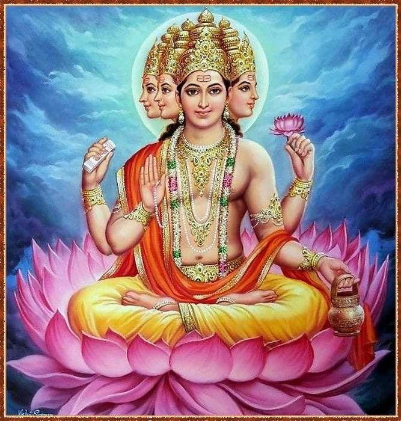
ব্রহ্মা
সৃষ্টি-বিন্যাস
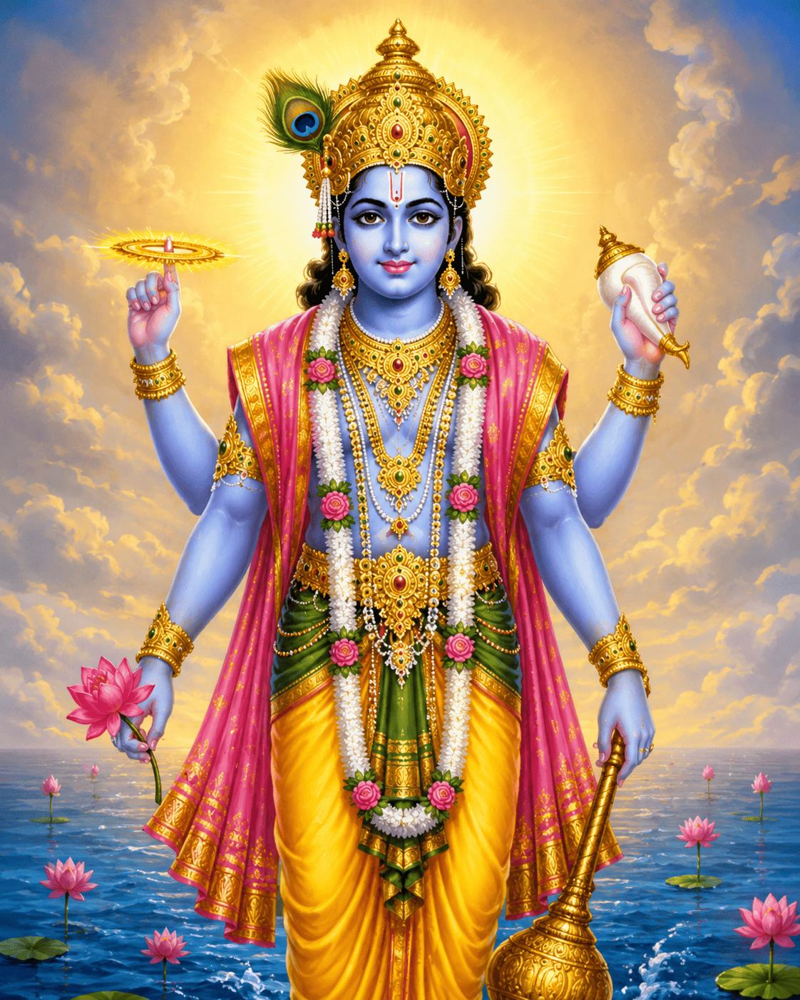
বিষ্ণু
পালন

মহেশ্বর
সংহার
এই তিনটি ভূমিকা তিন গুণের সঙ্গে সম্পর্কিত:
- ব্রহ্মা — রজোগুণের সঙ্গে সম্পর্কিত সৃষ্টি।
- বিষ্ণু — সত্ত্বগুণের মাধ্যমে পালন, কিন্তু তিনি নিজে জড়গুণের অধীন নন।
- শিব — তমোগুণের সঙ্গে সম্পর্কিত সংহার, কিন্তু তাঁর স্বরূপকে সাধারণ তমোগুণী জীবের মতো ভাবা ভুল।
এই তিনজনকে একসঙ্গে গুণাবতার বলা হয়।
৩. শিবতত্ত্ব বোঝার সবচেয়ে সুন্দর উপমা: দুধ ও দই
ব্রহ্মসংহিতা ৫.৪৫-এ বলা হয়েছে:
ক্ষীরং যথা দধি বিকারবিশেষযোগাৎ
সঞ্জায়তে ন হি ততঃ পৃথগস্তি হেতোঃ।
যঃ শম্ভুতামপি তথা সমুপৈতি কার্যাদ্
গোবিন্দমাদিপুরুষং তমহং ভজামি॥
ভাবার্থ:
যেমন দুধ বিশেষ প্রক্রিয়ায় দই হয়, দই দুধ থেকে সম্পূর্ণ বিচ্ছিন্ন পদার্থ নয়, কিন্তু দুধ ও দইয়ের কার্যগত পার্থক্য আছে—তেমনই ভগবান বিশেষ কার্যসম্পাদনের জন্য শম্ভুরূপ গ্রহণ করেন।
এটি শাস্ত্রের উপমা—ভগবানের দিব্য স্বরূপে জড়বিকারের দাবি নয়।
এই উপমা দিয়ে গৌড়ীয় আচার্যরা বোঝান, শিবতত্ত্ব ভগবানের সঙ্গে অভিন্নতার সম্পর্ক রাখলেও তাঁর একটি বিশেষ কার্যগত স্বাতন্ত্র্য আছে।
তবে শিবকে সাধারণ জীব বা ভগবানের চেয়ে নিকৃষ্ট কোনো জাগতিক সত্তা মনে করা উচিত নয়।
৪. সদাশিব ও মহেশ্বর কি একই?
এখানে আরও সূক্ষ্ম পার্থক্য রয়েছে।
গৌড়ীয় বৈষ্ণব ব্যাখ্যায়:
সদাশিব: নিত্য আধ্যাত্মিক স্তরে শিবের দিব্য প্রকাশ। শাস্ত্রীয় ব্যাখ্যায় সদাশিবলোক বা শিবলোকের কথা আসে।
মহেশ্বর বা রুদ্র: জড়জগতের সংহারকার্যের সঙ্গে যুক্ত শিবের প্রকাশ।
এটি গৌড়ীয় তত্ত্বের একটি সরলীকৃত চিত্র। সদাশিব ও রুদ্রের প্রকাশ-সম্পর্ক বিভিন্ন গ্রন্থ ও ব্যাখ্যায় আরও বিস্তারিত।
৫. তাহলে শিব কি বিষ্ণুর ভক্ত?
হ্যাঁ। শ্রীমদ্ভাগবতে মহাদেবকে একজন সর্বশ্রেষ্ঠ বৈষ্ণব হিসেবে মহিমান্বিত করা হয়েছে।
শ্রীমদ্ভাগবত ১২.১৩.১৬:
নিম্নগানাং যথা গঙ্গা
দেবানামচ্যুতো যথা।
বৈষ্ণবানাং যথা শম্ভুঃ
পুরাণানামিদং তথা॥
অর্থাৎ, নদীর মধ্যে যেমন গঙ্গা, দেবতাদের মধ্যে যেমন অচ্যুত, বৈষ্ণবদের মধ্যে যেমন শম্ভু, তেমনই পুরাণগুলির মধ্যে শ্রীমদ্ভাগবত শ্রেষ্ঠ।
এখানে শিবকে বলা হয়েছে:
বৈষ্ণবানাং যথা শম্ভুঃ — বৈষ্ণবদের মধ্যে শম্ভু শ্রেষ্ঠ।
তাই গৌড়ীয় বৈষ্ণব পরম্পরায় শিবের প্রতি শ্রদ্ধা অত্যন্ত গুরুত্বপূর্ণ।
৬. শিবের ভক্তির দুটি সুন্দর ঘটনা
ক. প্রাচেতাদের প্রতি শিবের উপদেশ
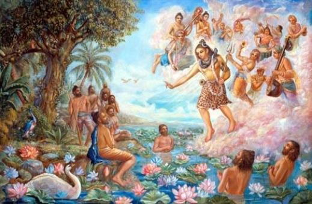
শ্রীমদ্ভাগবতের চতুর্থ স্কন্ধে প্রাচেতাদের সঙ্গে শিবের সাক্ষাৎ হয়।
দশজন প্রাচেতা তপস্যার উদ্দেশ্যে যাত্রা করেছিলেন। শিব তাঁদের সামনে উপস্থিত হয়ে ভগবান বিষ্ণুর উপাসনার জন্য এক অপূর্ব স্তব শেখান।
এটি রুদ্রগীত নামে পরিচিত (ভাগবত ৪.২৪)।
এই ঘটনায় শিব নিজে ভগবানের ভক্তির পথ প্রদর্শন করছেন।
শিক্ষা: প্রকৃত মহত্ত্ব শুধু নিজের ক্ষমতা প্রদর্শনে নয়, অন্যকে ভগবানের দিকে পরিচালিত করায়।
খ. সমুদ্রমন্থনে হলাহল বিষ পান
শ্রীমদ্ভাগবত অষ্টম স্কন্ধে সমুদ্রমন্থনের সময় ভয়ংকর হলাহল বিষের উৎপত্তি হয়।
দেবতা ও অসুরগণ বিপদে পড়লে শিব সেই বিষ গ্রহণ করেন এবং তাঁর কণ্ঠ নীল হয়ে যায়। তাই তাঁর নাম নীলকণ্ঠ।
এই ঘটনায় শিবের অসাধারণ করুণা ও আত্মত্যাগ প্রকাশিত হয়েছে।
শিক্ষা: মহৎ ব্যক্তি নিজের কষ্ট স্বীকার করেও অন্যের মঙ্গল সাধন করেন।
৭. তাহলে পাঁচজনের সম্পর্ক একবার মিলিয়ে নিই
| নাম | গৌড়ীয় তত্ত্ব | প্রধান পরিচয় |
|---|---|---|
| শ্রীকৃষ্ণ | স্বয়ং ভগবান | সমস্ত প্রকাশের মূল উৎস |
| শ্রীনারায়ণ | বিষ্ণুতত্ত্ব | বৈকুণ্ঠের অধিপতি |
| মহাবিষ্ণু | বিষ্ণুতত্ত্ব | অসংখ্য ব্রহ্মাণ্ডের সৃষ্টির উৎস |
| ব্রহ্মা | সাধারণত জীবতত্ত্ব | ব্রহ্মাণ্ডের গৌণ সৃষ্টিকর্তা |
| মহেশ্বর | শিবতত্ত্ব | সংহারকার্য ও শ্রেষ্ঠ বৈষ্ণব |
একটি সূক্ষ্ম ব্যতিক্রমও মনে রাখবেন: ব্রহ্মাপদে সাধারণত বিশেষ ক্ষমতাপ্রাপ্ত জীব অধিষ্ঠিত হন, কিন্তু যোগ্য জীবের অভাবে ভগবান নিজেও সেই কার্য সম্পাদন করতে পারেন—এমন ব্যাখ্যা গৌড়ীয় গ্রন্থে পাওয়া যায়।
৮. এবার শ্রীমদ্ভাগবত পড়ার জন্য সবচেয়ে গুরুত্বপূর্ণ শিক্ষা
এই আলোচনা থেকে তিনটি সিদ্ধান্ত পাওয়া যায়।
প্রথমত, ভগবানের বিভিন্ন প্রকাশকে মানুষের মতো আলাদা আলাদা প্রতিদ্বন্দ্বী দেবতা ভাবা উচিত নয়।
দ্বিতীয়ত, ব্রহ্মা ও শিবের ভূমিকা বুঝতে হলে সৃষ্টি, স্থিতি ও প্রলয়ের সঙ্গে তাঁদের সম্পর্ক বুঝতে হবে।
তৃতীয়ত, গৌড়ীয় বৈষ্ণব ধর্মে শিবের প্রতি শ্রদ্ধা এবং কৃষ্ণের প্রতি একনিষ্ঠ ভক্তি পরস্পরবিরোধী নয়।
শিবের মতো মহান বৈষ্ণবের কাছ থেকেই ভক্তির শিক্ষা গ্রহণ করা যায়।
এরপর আমাদের আরেকটি গভীর বিষয় বোঝা উচিত—মায়াশক্তি, জীবশক্তি ও অন্তরঙ্গা শক্তি।
কারণ সেখানেই উত্তর পাওয়া যাবে:
যদি সমস্ত জীব ভগবানের অংশ হয়, তাহলে আমরা মায়ায় আবদ্ধ কেন? আর গোলোকের নিত্য পার্ষদরা মায়ায় আবদ্ধ হন না কেন?
এই প্রশ্নটি সরাসরি শ্রীমদ্ভাগবতের ভক্তিতত্ত্ব এবং শ্রীচৈতন্য মহাপ্রভুর অচিন্ত্যভেদাভেদ দর্শনের কেন্দ্রে নিয়ে যাবে।
পর্ব ৭
সদাশিব ও রুদ্রের আবির্ভাব
আপনার প্রশ্নটা খুব সুন্দর। শিব, সদাশিব ও রুদ্র—এঁরা কি তিনজন আলাদা? কে কার থেকে উৎপন্ন হলেন? ব্রহ্মার কপাল থেকে রুদ্রের জন্ম হলে, সদাশিব কোথা থেকে এলেন?
এই প্রশ্নের উত্তর বুঝতে গেলে শ্রীমদ্ভাগবতের তৃতীয় স্কন্ধের দ্বাদশ অধ্যায়, ব্রহ্মসংহিতা এবং শ্রীচৈতন্যচরিতামৃতের শিবতত্ত্ব একসঙ্গে বুঝতে হবে।
প্রথমেই একটি গুরুত্বপূর্ণ পার্থক্য:
সদাশিবের নিত্য প্রকাশ এবং ব্রহ্মার কপাল থেকে রুদ্রের আবির্ভাব—দুটি একই ঘটনা নয়।
১. প্রথমে তিনটি পরিচয়
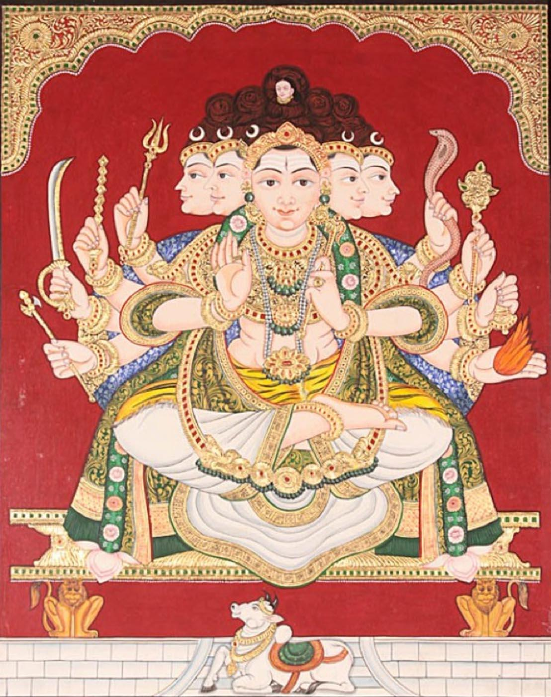
সদাশিব (Sadāśiva)
গৌড়ীয় বৈষ্ণব মতে, সদাশিব হলেন শিবের নিত্য, দিব্য প্রকাশ। তিনি জড়জগতের জন্ম-মৃত্যুর অধীন নন।
তাঁকে আধ্যাত্মিক শিবলোকের সঙ্গে সম্পর্কিত করে বর্ণনা করা হয়।
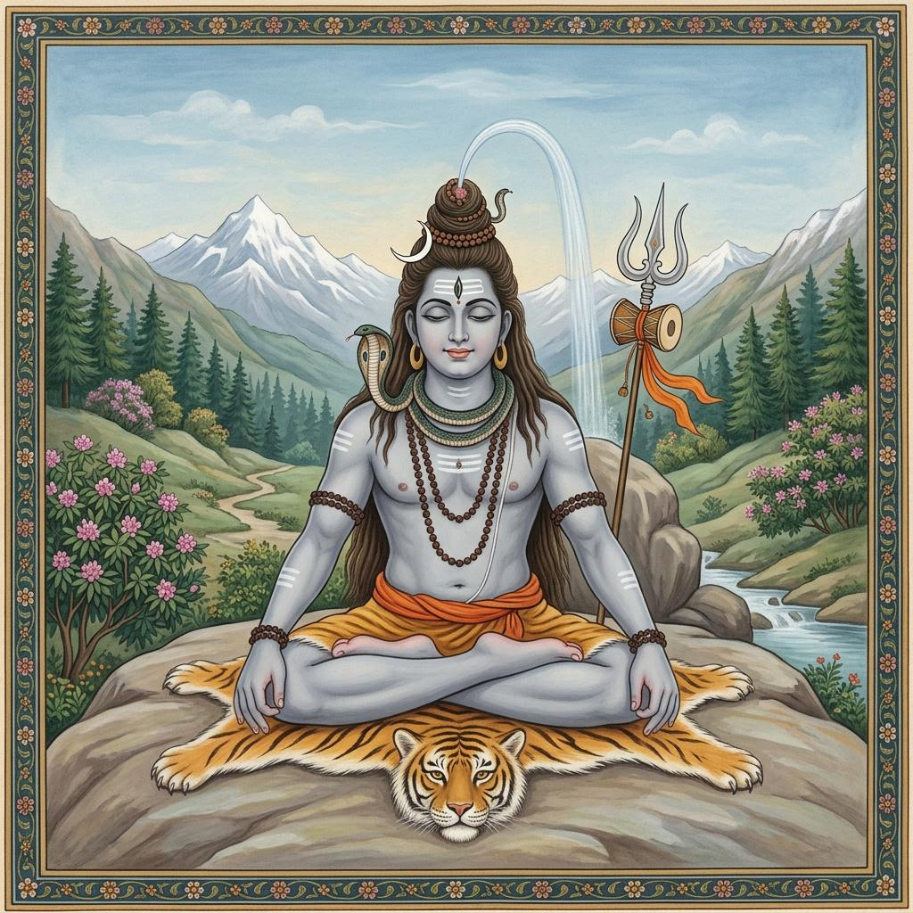
শিব বা মহেশ্বর (Śiva / Maheśvara)
জড়জগতের সংহারকার্যের সঙ্গে যুক্ত শিবতত্ত্বের প্রকাশ।
কৈলাসবাসী মহাদেব, পার্বতীপতি, নীলকণ্ঠ—এই পরিচয়গুলিতে আমরা সাধারণত তাঁকে চিনি।
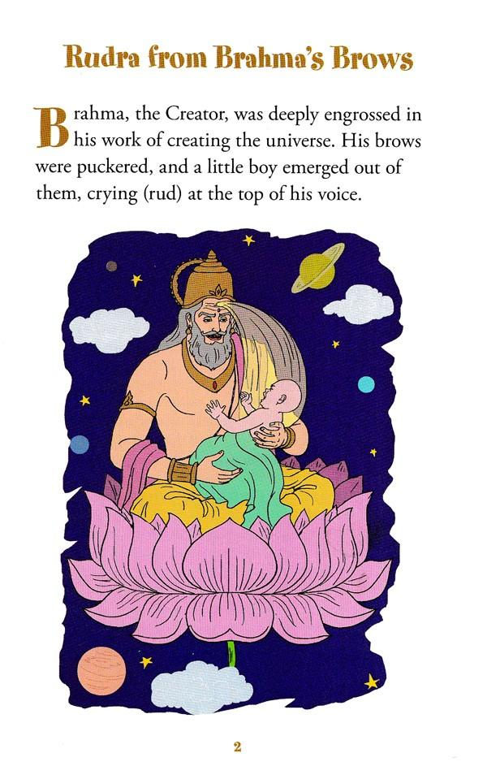
রুদ্র (Rudra)
শ্রীমদ্ভাগবতের একটি সৃষ্টিবর্ণনায় ব্রহ্মার ক্রোধ থেকে রুদ্রের আবির্ভাব ঘটে।
রুদ্র জড়জগতের সংহারশক্তির সঙ্গে যুক্ত। একাদশ রুদ্রের বর্ণনাও পাওয়া যায়।
এখানে খেয়াল করুন, শিব ও রুদ্র সবসময় দুটি সম্পূর্ণ পৃথক ব্যক্তি বোঝায় না। বহু শাস্ত্রীয় প্রসঙ্গে রুদ্রই শিবের নাম বা প্রকাশ। আবার নির্দিষ্ট সৃষ্টিবর্ণনায় রুদ্র বলতে একটি বিশেষ আবির্ভাব বোঝানো হয়েছে।
২. সদাশিবের উৎপত্তি কোথা থেকে?
গৌড়ীয় বৈষ্ণব দর্শনে সদাশিবের সাধারণ অর্থে জন্ম হয় না। তিনি নিত্যতত্ত্ব।
শ্রীকৃষ্ণ সমস্ত ভগবৎ-প্রকাশের মূল উৎস। তাঁর বিভিন্ন বিস্তার ও শক্তির মাধ্যমে সদাশিবতত্ত্বের প্রকাশ ব্যাখ্যা করা হয়।
শ্রীচৈতন্যচরিতামৃতের আদিলীলা ষষ্ঠ অধ্যায়ে শিবতত্ত্বের সঙ্গে বিষ্ণুতত্ত্বের সম্পর্ক ব্যাখ্যা করা হয়েছে।
ব্রহ্মসংহিতা ৫.৪৫-এ দুধ ও দইয়ের উপমা ব্যবহার করে বোঝানো হয়েছে—শম্ভু ভগবানের সঙ্গে অভিন্নতার সম্পর্কযুক্ত হলেও বিশেষ কার্য ও স্বরূপের দিক থেকে স্বতন্ত্র।
তাই:
- সদাশিব ব্রহ্মার সৃষ্টি নন।
- সদাশিব নিত্য দিব্য প্রকাশ।
- ব্রহ্মার কপাল থেকে রুদ্রের আবির্ভাব জড়সৃষ্টির একটি নির্দিষ্ট ঘটনা।
৩. ব্রহ্মার কপাল থেকে রুদ্রের জন্ম কীভাবে হল?
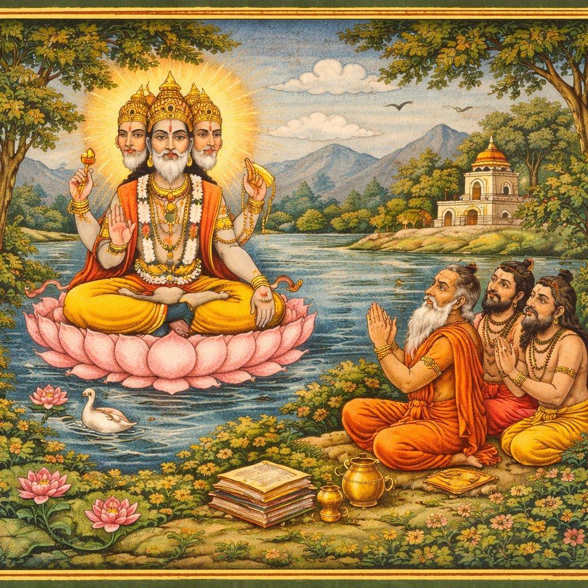
শ্রীমদ্ভাগবত ৩.১২.৭–১৩-এ এই ঘটনার বর্ণনা আছে।
সৃষ্টির প্রাথমিক পর্যায়ে ব্রহ্মা তাঁর চার কুমার—সনক, সনন্দন, সনাতন ও সনৎকুমারকে প্রজা বিস্তারের নির্দেশ দেন।
কিন্তু চার কুমার সংসারধর্ম গ্রহণ করতে চাননি। তাঁরা ব্রহ্মচর্য ও ভগবদনুসন্ধানের পথ বেছে নেন।
ব্রহ্মা এতে ক্রুদ্ধ হন। তিনি ক্রোধ সংযত করার চেষ্টা করলেও তাঁর ভ্রূমধ্য থেকে নীল-লোহিত বর্ণের এক শিশু আবির্ভূত হন।
সেই শিশু কাঁদতে থাকেন এবং নিজের নাম ও বাসস্থান জানতে চান।
ব্রহ্মা তাঁকে রুদ্র নাম দেন। কারণ তিনি কাঁদছিলেন—সংস্কৃত রুদ্ ধাতুর সঙ্গে নামটির সম্পর্ক ব্যাখ্যা করা হয়েছে।
ব্রহ্মা তাঁকে বিভিন্ন নাম, অবস্থান ও পত্নী প্রদান করেন এবং প্রজাসৃষ্টির দায়িত্ব দেন।
কিন্তু রুদ্রের সৃষ্ট জীবেরা অত্যন্ত উগ্র হয়ে জগতকে গ্রাস করতে উদ্যত হলে ব্রহ্মা তাঁকে তপস্যা করতে বলেন।
রুদ্র তখন তপস্যায় প্রবৃত্ত হন।
এখানে শিক্ষণীয় বিষয়: ব্রহ্মার ক্রোধ থেকে রুদ্রের আবির্ভাব হলেও, রুদ্রকে কেবল সাধারণ ক্রোধের প্রতিমূর্তি হিসেবে বোঝা ঠিক নয়। তাঁর বিশেষ মহাজাগতিক ভূমিকা রয়েছে।
৪. তাহলে কে কার থেকে প্রকাশিত?
দুটি ধারাকে সরাসরি সাধারণ পিতা-পুত্রের বংশতালিকা হিসেবে বোঝা উচিত নয়। প্রথমটি নিত্যতত্ত্বের সম্পর্ক, দ্বিতীয়টি জাগতিক সৃষ্টিলীলার ঘটনা।
৫. একাদশ রুদ্র কারা?
শ্রীমদ্ভাগবত ৩.১২.১২-এ রুদ্রের এগারোটি নাম দেওয়া হয়েছে।
| ক্রম | নাম |
|---|---|
| ১ | মন্যু |
| ২ | মনু |
| ৩ | মহিনস |
| ৪ | মহান্ |
| ৫ | শিব |
| ৬ | ঋতধ্বজ |
| ৭ | উগ্ররেতা |
| ৮ | ভব |
| ৯ | কাল |
| ১০ | বামদেব |
| ১১ | ধৃতব্রত |
এখানে এগারোটি নামকে রুদ্রের বিভিন্ন প্রকাশ বা পরিচয় হিসেবে ব্যাখ্যা করা হয়। অন্য পুরাণে একাদশ রুদ্রের নামের তালিকায় পার্থক্যও দেখা যায়।
৬. সবচেয়ে গুরুত্বপূর্ণ বিভ্রান্তি দূর করি
| প্রশ্ন | উত্তর |
|---|---|
| সদাশিব কি ব্রহ্মার পুত্র? | না। সদাশিব নিত্য দিব্যতত্ত্ব। |
| রুদ্র কি ব্রহ্মার থেকে আবির্ভূত? | হ্যাঁ, ভাগবতের নির্দিষ্ট সৃষ্টিবর্ণনায়। |
| রুদ্র ও শিব কি সম্পূর্ণ আলাদা? | সর্বদা নয়; রুদ্র শিবের নাম ও প্রকাশ হিসেবেও ব্যবহৃত। |
| শিব কি সাধারণ জীব? | গৌড়ীয় মতে শিবতত্ত্ব সাধারণ জীবতত্ত্ব থেকে স্বতন্ত্র। |
| শিব কি বিষ্ণুর ভক্ত? | হ্যাঁ, ভাগবত ১২.১৩.১৬-এ শম্ভুকে বৈষ্ণবশ্রেষ্ঠ বলা হয়েছে। |
৭. এখান থেকে একটি গভীর আধ্যাত্মিক শিক্ষা
চার কুমার ব্রহ্মার আদেশে প্রজাসৃষ্টি না করে ভগবদনুসন্ধানের পথ বেছে নিলেন। তাঁদের প্রত্যাখ্যান থেকে ব্রহ্মার ক্রোধ এবং সেই ক্রোধ থেকে রুদ্রের আবির্ভাব—এটি সৃষ্টির একটি আশ্চর্য ঘটনা।
কিন্তু সেই রুদ্রই পরবর্তীকালে প্রাচেতাদের ভগবান বিষ্ণুর উপাসনা শেখান। আবার সমুদ্রমন্থনে জগতের মঙ্গলের জন্য হলাহল বিষ পান করেন।
অর্থাৎ, শিবতত্ত্বের মহিমা শুধু সংহারে সীমাবদ্ধ নয়; ভক্তি, ত্যাগ, করুণা ও জগতের কল্যাণেও তাঁর অসাধারণ ভূমিকা রয়েছে।
এখান থেকে আমাদের পরবর্তী আলোচনার জন্য দুটি সুন্দর বিষয় রয়েছে: শিবলোক ও কৈলাসের পার্থক্য, এবং শিব ও পার্বতীর মাধ্যমে মহামায়ার সঙ্গে শিবতত্ত্বের সম্পর্ক। এই দুটি বুঝলে সদাশিব, মহেশ্বর ও রুদ্রের পার্থক্য আরও গভীরভাবে পরিষ্কার হবে।
পর্ব ৮
কৈলাস, শিবলোক ও শক্তিতত্ত্ব
আজ আমরা শিবতত্ত্বের আরও গভীরে যাব। আগের আলোচনায় দেখেছি, সদাশিব নিত্যতত্ত্ব, আর ব্রহ্মার ভ্রূমধ্য থেকে রুদ্রের আবির্ভাব একটি সৃষ্টিলীলা।
এবার তিনটি প্রশ্নের উত্তর খুঁজব:
- শিবলোক ও কৈলাস কি একই স্থান?
- পার্বতী, দুর্গা, মহামায়া ও যোগমায়া—এঁরা কি একই দেবী?
- শিব ও শক্তির সম্পর্কের সঙ্গে শ্রীকৃষ্ণের সম্পর্ক কী?
পুরো আলোচনাটি গৌড়ীয় বৈষ্ণব দর্শনের আলোকে করব। শৈব ও শাক্ত দর্শনে কয়েকটি বিষয়ের ব্যাখ্যা ভিন্ন।
১. শিবলোক ও কৈলাসের পার্থক্য
আমরা সাধারণত শুনি, মহাদেব কৈলাসে বাস করেন। কিন্তু গৌড়ীয় বৈষ্ণব গ্রন্থে শিবলোক কথাটিও পাওয়া যায়।
এখানে তিনটি ধারণা আলাদা করে বোঝা দরকার।
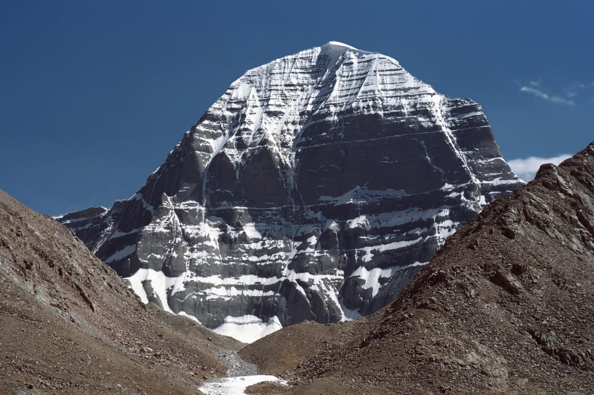
পার্থিব কৈলাস
হিমালয়ের উত্তরে তিব্বতের কৈলাস পর্বত। হিন্দু, বৌদ্ধ, জৈন ও বন ধর্মাবলম্বীদের কাছে পবিত্র।
এটি পৃথিবীর একটি বাস্তব ভৌগোলিক স্থান।
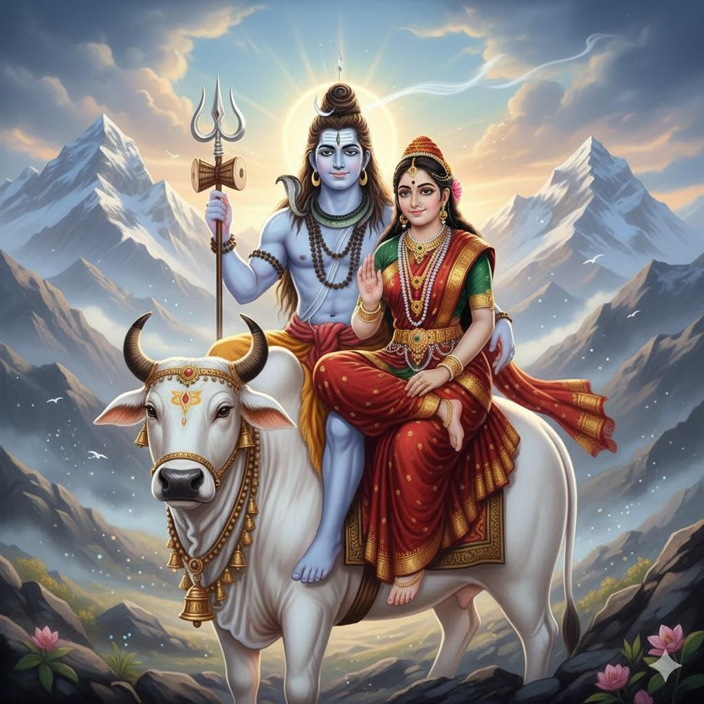
দিব্য কৈলাস
পুরাণে শিব-পার্বতীর আবাস হিসেবে কৈলাসের অলৌকিক বর্ণনা আছে।
পার্থিব কৈলাসের সঙ্গে এর পবিত্র সম্পর্ক মানা হয়, তবে সব শাস্ত্রীয় বর্ণনাকে সাধারণ ভৌগোলিক স্থান হিসেবে বোঝানো হয় না।
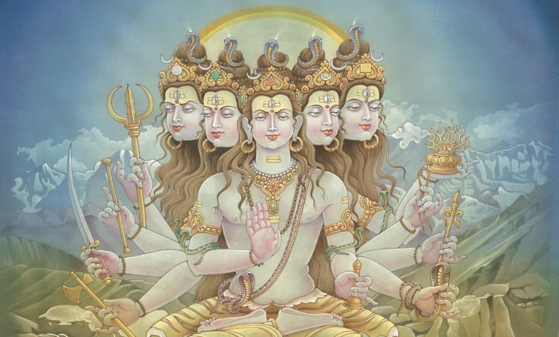
সদাশিবলোক
গৌড়ীয় তত্ত্বে সদাশিবের নিত্য দিব্য অবস্থানের সঙ্গে যুক্ত শিবলোকের ধারণা রয়েছে।
কিছু গৌড়ীয় ব্যাখ্যায় একে জড়জগৎ ও বৈকুণ্ঠের সীমান্তবর্তী বিশেষ তত্ত্বগত অবস্থান হিসেবে আলোচনা করা হয়।
এখানে মনে রাখবেন, শিবলোক শব্দটি সব গ্রন্থে একই অর্থে ব্যবহৃত হয় না। কোথাও শিবের জাগতিক আবাস, কোথাও নিত্য দিব্য শিবধাম বোঝানো হয়।
২. পার্বতী, দুর্গা, মহামায়া ও যোগমায়া
এবার সবচেয়ে সূক্ষ্ম বিষয়।
গৌড়ীয় বৈষ্ণব দর্শনে ভগবানের শক্তিকে প্রধানত তিন ভাগে ব্যাখ্যা করা হয়।
| শক্তি | পরিচয় | কাজ |
|---|---|---|
| অন্তরঙ্গা শক্তি | স্বরূপশক্তি বা চিৎশক্তি | ভগবানের নিত্যধাম ও লীলার প্রকাশ |
| তটস্থা শক্তি | জীবশক্তি | অসংখ্য জীবাত্মা |
| বহিরঙ্গা শক্তি | মায়াশক্তি | জড়জগতের সৃষ্টি ও পরিচালনা |
শ্রীচৈতন্যচরিতামৃত, মধ্যলীলা ৬.১৬০ এবং বিষ্ণুপুরাণ ৬.৭.৬১-এর আলোচনায় এই শক্তিবিভাগ গুরুত্বপূর্ণ।
মহামায়া
মহামায়া ভগবানের বহিরঙ্গা শক্তি। তিনি জড়জগতের ত্রিগুণ—সত্ত্ব, রজ ও তম—দ্বারা জাগতিক কার্যক্রম পরিচালনা করেন।
জীব যখন নিজের প্রকৃত স্বরূপ ভুলে জড়জগতকে স্থায়ী আশ্রয় মনে করে, তখন সে মায়াবদ্ধ অবস্থায় থাকে।
যোগমায়া
যোগমায়া ভগবানের অন্তরঙ্গা শক্তির বিশেষ কার্যপ্রকাশ।
তিনি ভগবানের নিত্যলীলার আয়োজন করেন এবং ভক্তদের সঙ্গে ভগবানের প্রেমময় সম্পর্কের বিশেষ রস প্রকাশ করেন।
উদাহরণস্বরূপ, মা যশোদা কৃষ্ণকে নিজের সন্তান মনে করেন। কৃষ্ণ যে সর্বশক্তিমান পরমেশ্বর, সেই ঐশ্বর্যজ্ঞান তাঁর মাতৃস্নেহকে আচ্ছন্ন করে রাখে।
গৌড়ীয় ব্যাখ্যায় এটি যোগমায়ার বিশেষ লীলাশক্তির কার্য।
মহামায়া জীবকে জড়জগতের বন্ধনে আবদ্ধ রাখেন; যোগমায়া ভগবানের প্রেমলীলার অন্তরঙ্গ পরিবেশ প্রকাশ করেন। তবে এই একটি বাক্যে তাঁদের সম্পূর্ণ তত্ত্ব শেষ হয় না।
৩. দুর্গাদেবী কোথায়?
ব্রহ্মসংহিতা ৫.৪৪-এ দুর্গাদেবী সম্পর্কে বলা হয়েছে:
সৃষ্টিস্থিতিপ্রলয়সাধনশক্তিরেকা
ছায়েব যস্য ভুবনানি বিভর্তি দুর্গা।
অর্থাৎ, দুর্গাদেবী সৃষ্টি, স্থিতি ও প্রলয়ের কার্য পরিচালনাকারী শক্তি; তিনি গোবিন্দের ইচ্ছার অধীনে জগৎ ধারণ করেন।
গৌড়ীয় ব্যাখ্যায় এখানে দুর্গা হলেন ভগবানের বহিরঙ্গা মায়াশক্তির অধিষ্ঠাত্রী।
তবে পার্বতী, দুর্গা, মহামায়া ও যোগমায়াকে সব প্রসঙ্গে সম্পূর্ণ সমার্থক বলা ঠিক নয়। তাঁদের নাম ও রূপের সম্পর্ক শাস্ত্র এবং নির্দিষ্ট লীলার প্রেক্ষাপটে বুঝতে হয়।
শাক্ত দর্শনে আবার মহাদেবী বা আদ্যাশক্তিকে সর্বোচ্চ পরমতত্ত্ব হিসেবে ব্যাখ্যা করা হয়। সেটি একটি পৃথক ধর্মতাত্ত্বিক দৃষ্টিভঙ্গি।
৪. শিব ও শক্তির সম্পর্ক
গৌড়ীয় বৈষ্ণব তত্ত্বে শিবের সঙ্গে জড়প্রকৃতির বিশেষ সম্পর্ক আছে।
ব্রহ্মসংহিতা ৫.৮-এ শম্ভু ও মায়ার সম্পর্ক সৃষ্টিতত্ত্বের ভাষায় ব্যাখ্যা করা হয়েছে।
এখানে শম্ভুকে পুরুষতত্ত্বের একটি বিশেষ প্রকাশ এবং মায়াকে জড়সৃষ্টির শক্তি হিসেবে আলোচনা করা হয়।
কিন্তু এই বর্ণনাকে সাধারণ মানুষের দৈহিক সম্পর্কের মতো বোঝা উচিত নয়। এটি জগতের উৎপত্তি ও শক্তির কার্যপ্রকাশ বোঝানোর শাস্ত্রীয় ভাষা।
এটি শক্তিতত্ত্বের ধারণাগত চিত্র; শম্ভু যে কেবল বহিরঙ্গা শক্তির অধীন, এমন অর্থ নয়।
৫. শিব কি মায়ার অধীন?
এখানে উত্তরটা সূক্ষ্ম।
সাধারণ জীব মায়ার দ্বারা আবদ্ধ হতে পারে। কিন্তু শিবতত্ত্বকে সেই অর্থে সাধারণ মায়াবদ্ধ জীব বলা হয় না।
শিবের সঙ্গে মায়াশক্তির সম্পর্ক মূলত তাঁর বিশেষ মহাজাগতিক ভূমিকার সঙ্গে যুক্ত।
অন্যদিকে, সদাশিবের নিত্য দিব্য স্বরূপকে জড়মায়ার অধীন ভাবা হয় না।
সুতরাং শিব মায়াশক্তির সঙ্গে যুক্ত, কিন্তু সাধারণ জীবের মতো মায়াবদ্ধ—এই দুটি বক্তব্য এক নয়।
৬. তাহলে গৌড়ীয় বৈষ্ণবের কাছে শিবের স্থান কোথায়?
এখানে একটি অপূর্ব সমন্বয় আছে।
শ্রীমদ্ভাগবত ১২.১৩.১৬-এ শম্ভুকে বৈষ্ণবশ্রেষ্ঠ বলা হয়েছে:
বৈষ্ণবানাং যথা শম্ভুঃ।
অর্থাৎ, বৈষ্ণবদের মধ্যে শম্ভু শ্রেষ্ঠ।
আবার শ্রীমদ্ভাগবতের চতুর্থ স্কন্ধে রুদ্রগীতের মাধ্যমে শিব প্রাচেতাদের ভগবান বিষ্ণুর উপাসনা শিক্ষা দেন।
এই কারণে গৌড়ীয় বৈষ্ণব পরম্পরায় শিবকে গভীর শ্রদ্ধা করা হয়। তিনি ভগবানের মহান ভক্ত এবং বিশেষ তত্ত্বের অধিকারী।
৭. সবকিছু একসঙ্গে মনে রাখুন
| নাম | সহজ পরিচয় |
|---|---|
| সদাশিব | নিত্য দিব্য শিবপ্রকাশ |
| মহেশ্বর | শিবের জাগতিক কার্যসম্পর্কিত প্রকাশ |
| রুদ্র | শিবের নাম; সৃষ্টিলীলায় বিশেষ আবির্ভাব |
| পার্বতী | শিবের শক্তিস্বরূপা পত্নী |
| দুর্গা | দেবীর শক্তিশালী রূপ; গৌড়ীয় সৃষ্টিতত্ত্বে বহিরঙ্গা শক্তির অধিষ্ঠাত্রী |
| মহামায়া | জড়জগতের আবরণকারী শক্তি |
| যোগমায়া | ভগবানের অন্তরঙ্গা লীলাশক্তি |
একটি গভীর প্রশ্ন দিয়ে শেষ করি
আপনি নিশ্চয়ই লক্ষ্য করেছেন, ভাগবতে শিবের সঙ্গে বিষ্ণুর সম্পর্ক যেমন এসেছে, তেমনই শিবের সঙ্গে ভগবতী পার্বতীর কথোপকথনও এসেছে।
বিশেষ করে ষষ্ঠ স্কন্ধে চিত্রকেতু মহারাজ, শিব ও পার্বতীর ঘটনাটি অসাধারণ।
সেখানে শিবের বৈষ্ণবমহিমা, চিত্রকেতুর ভক্তি এবং পার্বতীর অভিশাপ—এই তিনটির মধ্যে এমন এক শিক্ষা আছে, যা থেকে বোঝা যায় একজন প্রকৃত ভক্ত সুখ-দুঃখ, স্বর্গ-নরক, অভিশাপ-আশীর্বাদকে কীভাবে দেখেন।
এই চিত্রকেতু–শিব–পার্বতীর ঘটনাটি আমাদের পরবর্তী ভাগবত আলোচনা হিসেবে খুবই উপযুক্ত।